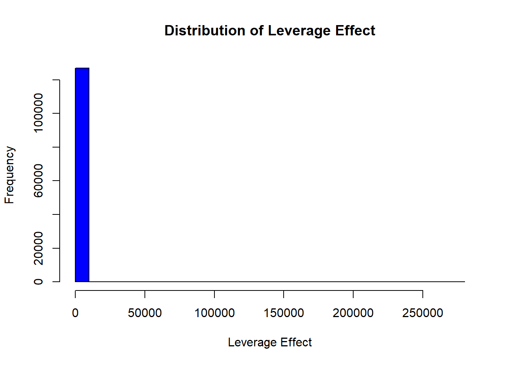
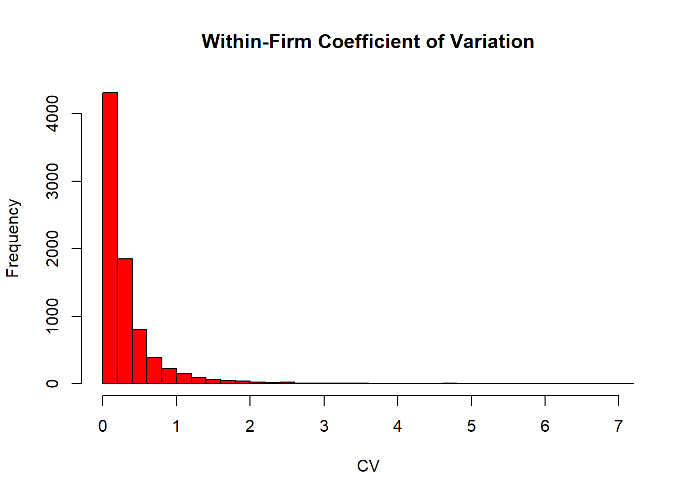
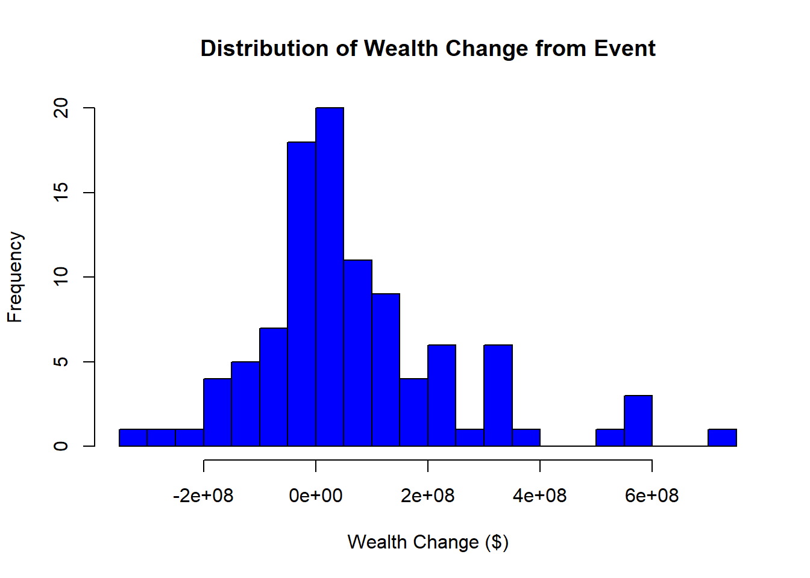
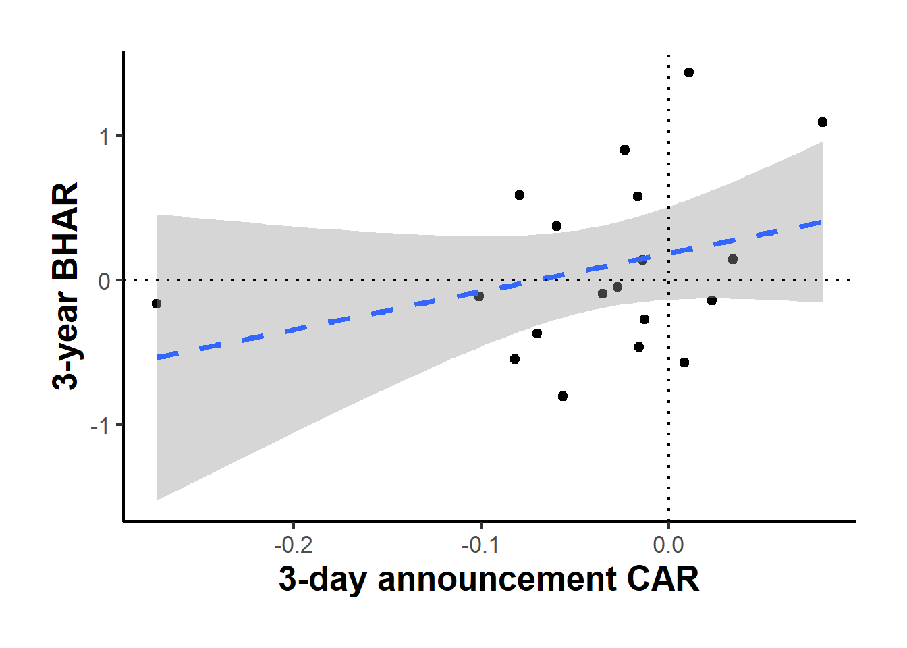
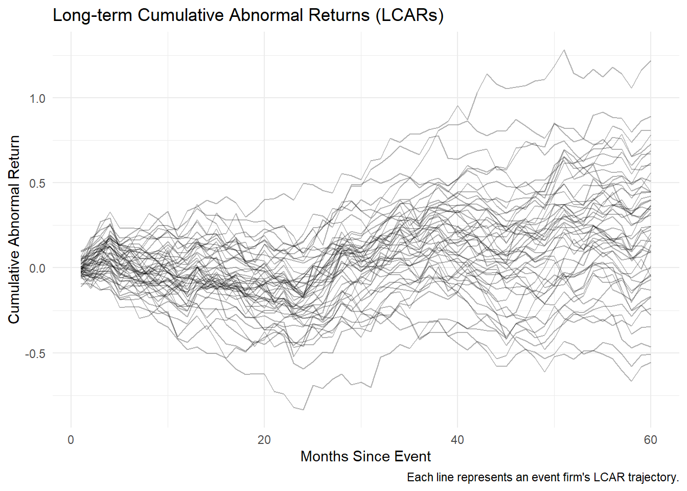
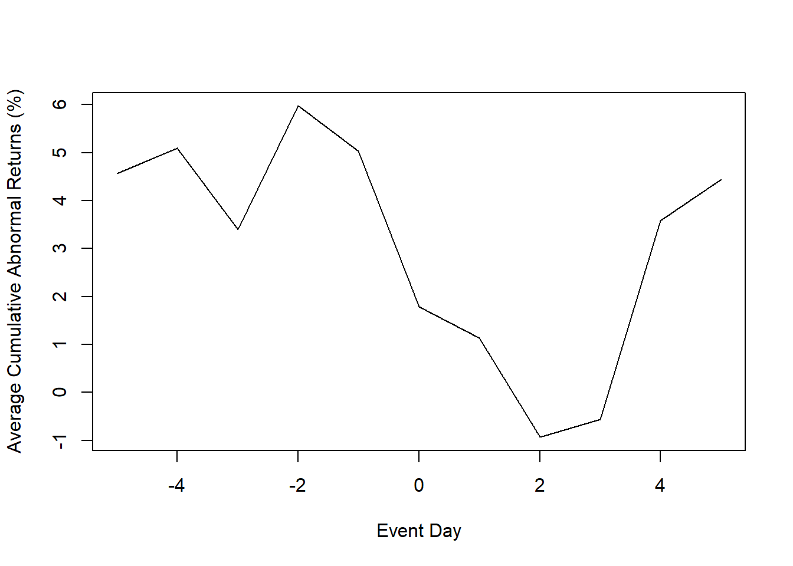
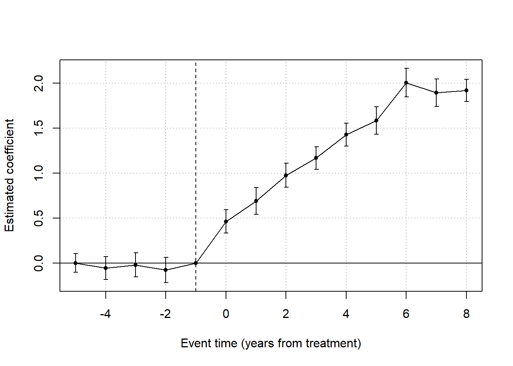

42 Event Studies
The event study methodology is widely used in finance, marketing, and management to measure the impact of specific events on stock prices. The foundation of this methodology is the Efficient Markets Hypothesis proposed by Fama (1970), which asserts that asset prices reflect all available information. Under this assumption, stock prices should immediately react to new, unexpected information, making event studies a useful tool for assessing the economic impact of firm- and non-firm-initiated activities.
A note on descriptive vs. causal interpretation. In its classical finance form, an event study produces a series of abnormal returns: deviations of observed returns from the return predicted by a market (or factor) model. Abnormal returns are a descriptive object. They tell us how prices moved relative to a statistical benchmark around the event window.
Interpreting them as a causal effect of the event on firm value requires additional design-level assumptions:
- The event date is known precisely and was not anticipated. Otherwise the market has priced it in before the window opens.
- No other news or events overlap the event window, so that the price movement is attributable to the focal event and not a confounder.
- The expected-return model is correctly specified during the estimation window.
When these conditions are not met, the event study documents a correlation between a period and a price movement, not a causal effect. In modern empirical practice, event studies are often layered on top of an explicit quasi-experimental design (DiD, RD, or IV): the event-study plot then serves as a visualization of dynamic treatment effects, and the causal identification comes from the underlying design rather than from the event study itself.
A separate and harder question, even granting all three conditions, is whether abnormal returns track the ex-post value created by the event. Section 42.10 reviews the Ben-David et al. (2026) evidence that for corporate acquisitions the answer is essentially no: announcement CAR is uncorrelated with ex-post value-creation measures, and is in fact dominated by news about the standalone acquirer rather than news about the deal. The implication for the rest of this chapter is that “abnormal returns describe a price reaction” and “abnormal returns measure value creation” are two separate empirical claims, and the second requires more than the four foundational assumptions.
The first event study was conducted by Dolley (1933), while Campbell et al. (1998) formalized the methodology for modern applications. Later, Dubow and Monteiro (2006) developed a metric to assess market transparency (i.e., a way to gauge how “clean” a market is) by tracking unusual stock price movements before major regulatory announcements. Their study found that abnormal price shifts before announcements could indicate insider trading, as prices reacted to leaked information before official disclosures.
Advantages of Event Studies
More Reliable than Accounting-Based Measures: Unlike financial metrics (e.g., profits), which managers can manipulate, stock prices are harder to alter and reflect real-time investor sentiment (Benston 1985).
Easy to Conduct: Event studies require only stock price data and simple econometric models, making them widely accessible for researchers.
Types of Events in Event Studies
Table 42.1 groups the events typically analysed by event studies into firm-internal and firm-external categories.
| Event Type | Examples |
|---|---|
| Internal Events | Stock repurchase, earnings announcements, leadership changes |
| External Events | Macroeconomic shocks, regulatory changes, media reports |
42.1 A Brief Tour of How the Method Travelled
It is worth pausing on how the event study became a workhorse in three quite different fields, because the migration from finance into management and then marketing tells you something about what the method actually buys you and what it cannot.
The technique was born in finance. Fama et al. (1969) used the announcement of stock splits to ask a deceptively simple question: do prices adjust to new information immediately, or does adjustment take place over days or weeks? The answer mattered for the efficient-markets hypothesis, but the machinery, pick an event, define a window, compute a normal return, attribute the gap to the event, was general. Once the machinery existed, every field with a clean event and a market response found a use for it.
Management researchers were the next adopters. By the late 1990s the question had shifted from market efficiency to managerial decision-making: do the choices managers make actually create shareholder value, and which ones? McWilliams and Siegel (1997) surveyed how the method had been imported into management research and laid out the methodological cautions, short windows, careful event definition, attention to confounding events, that have shaped practice ever since. Their review remains the standard starting point for anyone applying event studies outside finance.
Marketing scholars adopted the same machinery to defend marketing decisions in the language that boards and CFOs already spoke: stock price. If a brand acquisition, a celebrity endorsement, or a new product launch is supposed to create value, the event study lets us check whether the market thought so on the day the news broke. Two strands of marketing event studies emerged. The first asks about firm-initiated events: things the firm chose to do. The second asks about non-firm-initiated events: things that happened to the firm, often outside its control.
Tables 42.2 and 42.3 collect representative work in each strand, organised by event type so that the table doubles as a reading list for a particular research question. The point is not to memorise these citations but to see the breadth of what an event study can address, from corporate name changes to data breaches, once you accept that “value created” is being proxied by “market reaction”.
| Event Type | Studies |
|---|---|
| Corporate Changes | (Horsky and Swyngedouw 1987) (name change), (Kalaignanam and Bahadir 2013) (corporate brand change) |
| New Product Strategies | (Chaney et al. 1991) (new product announcements), (Raassens et al. 2012) (outsourcing product development), (Sood and Tellis 2009) (innovation payoff), (Borah and Tellis 2014) (make, buy or ally for innovations), (Fang et al. 2015) (co-development agreements) |
| Brand & Marketing Strategies | (Lane and Jacobson 1995) (brand extensions), (Wiles et al. 2012) (brand acquisition) |
| Advertising & Promotions | (Wiles et al. 2010) (deceptive advertising), (Cornwell et al. 2005) (sponsorship announcements) |
| Strategic Alliances | (Houston and Johnson 2000) (joint ventures), (Fang et al. 2015) (co-development agreements), (Sorescu et al. 2007) (M&A), (Homburg et al. 2014) (channel expansions) |
| Entertainment & Celebrity Endorsements | (Agrawal and Kamakura 1995) (celebrity endorsements), (Elberse 2007) (casting announcements), (Wiles and Danielova 2009) (product placement in movies), (Joshi and Hanssens 2009) (movie releases), (Karniouchina et al. 2011) (product placement), (Mazodier and Rezaee 2013) (sports announcements) |
Two further marketing studies sit slightly outside that grid but illustrate the same logic: Geyskens et al. (2002) examined newspapers’ decisions to launch internet channels, and Boyd et al. (2010) looked at the market’s reaction to new CMO appointments. Both treat a strategic choice as the event and ask whether shareholders rewarded or punished it.
The non-firm-initiated literature is structurally similar but methodologically more demanding. Because the firm did not choose the event, the researcher has fewer levers to manipulate: there is no internal documentation of the announcement timing, leakage is harder to rule out, and selection into “events that journalists write about” is itself a research question. The studies in Table 42.3 tackle this in different ways, some focus on regulator-announced events with a clean publication date, others on negative shocks where the firm’s response is partly endogenous to the event itself.
| Event Type | Studies |
|---|---|
| Regulatory Decisions | (Sorescu et al. 2003) (FDA approvals), (Rao et al. 2008) (FDA approvals), (Tipton et al. 2009) (deceptive advertising regulation) |
| Media Coverage & Consumer Reactions | (Jacobson and Mizik 2009) (customer satisfaction score release), (Chen et al. 2012) (third-party movie reviews), (Tellis and Johnson 2007) (quality reviews by Walter Mossberg) |
| Economic & Market Shocks | (Gielens et al. 2008) (Walmart’s entry into the UK), (Xiong and Bharadwaj 2013) (asymmetric news impact), (Pandey et al. 2005) (diversity elite list) |
| Consumer & Industry Recognitions | (Balasubramanian et al. 2005) (high-quality achievements), (Fornell et al. 2006) (customer satisfaction), (Ittner et al. 2009) (customer satisfaction) |
| Financial & Market Reactions | (Boyd and Spekman 2008) (indirect ties), (Karniouchina et al. 2009) (Mad Money with Jim Cramer), (Bhagat et al. 1998) (litigation) |
| Product & Service Failures | (Y. Chen et al. 2009) (product recalls), (Gao et al. 2015) (product recalls), (Malhotra and Kubowicz Malhotra 2011) (data breach) |
The space of plausible event studies is far from exhausted. Major advertising campaigns, market entries, product recalls, and patent announcements are all candidate events whose informational content arrives with a clean timestamp and whose effect on firm value is in principle measurable. Whenever you encounter a setting where (a) the event is dated precisely, (b) market participants could plausibly update on it, and (c) you can construct a defensible counterfactual from the estimation window, the apparatus that follows in this chapter is in scope.
42.2 Key Assumptions
The interpretation of an event study, whether descriptive or causal, rests on a small set of assumptions about how prices, information, and the firm’s stakeholders interact. None of these are testable in the strong sense that randomization is, and each fails in identifiable ways. Reading the four assumptions below as licensing claims, each one buying you a specific interpretation, is more useful than reading them as a checklist.
The Efficient Market Hypothesis (Fama 1970) is the load-bearing assumption. It says that stock prices fully and instantly reflect publicly available information, so a measurable price reaction in the days surrounding an event is interpretable as the market’s revaluation of the firm in light of the event’s news content. When EMH holds in its strong form, the event window is exactly where the news shows up; when it holds only weakly (information leaks before the announcement, prices drift in the days after), the analyst must widen the window or accept that the estimated abnormal return is contaminated. EMH is not all-or-nothing in practice, and most modern event studies assume a semi-strong form (prices reflect public information) rather than a strong form (prices reflect all information including private signals).
The stock market as a proxy for firm value assumption says that the price of equity is a meaningful summary of the firm’s value to its primary stakeholders. This is uncontroversial in finance applications where shareholders are the relevant audience. It is more contested in marketing or management applications, where the relevant audience is sometimes customers, employees, or regulators, and where firm value to those stakeholders is not perfectly tracked by share prices. The closer the research question is to “what did this event do to shareholder wealth?”, the better this assumption holds; the further it is from that question, the more the analyst should report alternative outcome measures alongside abnormal returns.
The sharp event-effect assumption requires that the event causes an immediate and concentrated price reaction. If the market reacts gradually over several months, no plausible event window will isolate the effect; if the market anticipates the event, the price has already moved before the window opens. The assumption is most credible for events with precise timestamps that the market could not have anticipated (regulatory rulings on a fixed announcement date, court verdicts, corporate disclosures with mandated reporting calendars). It is least credible for events whose probability of occurrence was already partially priced in, in which case the abnormal return measures the surprise component, not the full effect of the event.
The proper calculation of expected returns is what gives the abnormal return a benchmark. The mechanics matter: a market model with the wrong factor specification, an estimation window that includes a structural break, or a beta estimated on a thin sample will all produce expected returns that misstate the counterfactual price path. The downstream consequence is that the abnormal return is only as clean as the expected-return model. We return to this point in the expected return calculation section and the econometric event-study designs section.
These four assumptions together support a descriptive claim, that the abnormal return measures the price reaction to the event window. Promoting that descriptive claim to a causal claim, that the event itself caused the price reaction, requires the additional design-level assumptions discussed at the start of this chapter: no contemporaneous confounding events, no anticipation, and a benchmark model that is correctly specified throughout the estimation window. Modern empirical practice typically pairs the event-study machinery with an explicit quasi-experimental design (Regression Discontinuity, examiner IV, or Difference-in-Differences) so that the causal claim does not rest on the four assumptions above alone.
42.3 Steps for Conducting an Event Study
42.3.1 Step 1: Event Identification
An event study examines how a particular event affects a firm’s stock price, assuming that stock markets incorporate new information efficiently. The event must influence either the firm’s expected cash flows or discount rate (Sorescu et al. 2017, 191).
Common Types of Events Analyzed
Table 42.4 lists the broad event categories most often analysed and gives concrete examples of each.
| Event Category | Examples |
|---|---|
| Corporate Actions | Dividends, mergers & acquisitions (M&A), stock buybacks, name changes, brand extensions, sponsorships, product launches, advertising campaigns |
| Regulatory Changes | New laws, taxation policies, financial deregulation, trade agreements |
| Market Events | Privatization, nationalization, entry/exit from major indices |
| Marketing-Related Events | Celebrity endorsements, new product announcements, media reviews |
| Crisis & Negative Shocks | Product recalls, data breaches, lawsuits, financial fraud scandals |
To systematically identify events, researchers use WRDS S&P Capital IQ Key Developments, which tracks U.S. and international corporate events.
42.3.2 Step 2: Define the Event and Estimation Windows
42.3.2.1 (A) Estimation Window (\(T_0 \to T_1\))
The estimation window is used to compute normal (expected) returns before the event. Table 42.5 summarises common choices in the literature.
| Study | Estimation Window |
|---|---|
| (Johnston 2007) | 250 days before the event, with a 45-day gap before the event window |
| (Wiles et al. 2012) | 90-trading-day estimation window ending 6 days before the event |
| (Sorescu et al. 2017, 194) | 100 days before the event |
Leakage Concern: To avoid biases from information leaking before the event, researchers should check broad news sources (e.g., LexisNexis, Factiva, RavenPack) for pre-event rumors.
42.3.2.2 (B) Event Window (\(T_1 \to T_2\))
The event window captures the market’s reaction to the event. The selection of an appropriate window length depends on event type and information speed; Table 42.6 reports choices used in the literature.
| Study | Event Window |
|---|---|
| (Balasubramanian et al. 2005; Boyd et al. 2010; Fornell et al. 2006) | 1-day window |
| (Raassens et al. 2012; Sood and Tellis 2009) | 2-day window |
| (Cornwell et al. 2005; Sorescu et al. 2007) | Up to 10 days |
42.3.3 Step 3: Compute Normal vs. Abnormal Returns
The abnormal return measures how much the stock price deviates from its expected return:
\[ \text{AR}_{it} = R_{it} - E(R_{it} \mid X_t) \]
where:
\(\text{AR}_{it}\) = abnormal return for firm \(i\) at time \(t\)
\(R_{it}\) = realized (dividend-adjusted) return
\(E(R_{it} \mid X_t)\) = expected return given the conditioning information \(X_t\) (typically the market or factor returns over the estimation window)
42.3.3.1 (A) Statistical Models for Expected Returns
These models assume jointly normal and independently distributed returns.
-
Constant Mean Return Model
\[ E(R_{it}) = \frac{1}{T} \sum_{t=T_0}^{T_1} R_{it} \] -
Market Model
\[ R_{it} = \alpha_i + \beta_i R_{mt} + \epsilon_{it} \] -
Adjusted Market Return Model
\[ E(R_{it}) = R_{mt} \]
42.3.4 Step 4: Compute Cumulative Abnormal Returns
Once abnormal returns are computed, we aggregate them over the event window:
\[ CAR_{i} = \sum_{t=T_{\text{event, start}}}^{T_{\text{event, end}}} AR_{it} \]
For multiple firms, compute the Average Cumulative Abnormal Return (ACAR):
\[ ACAR = \frac{1}{N} \sum_{i=1}^{N} CAR_{i} \]
42.4 Event Studies in Marketing
A key challenge in marketing-related event studies is determining the appropriate dependent variable (Skiera et al. 2017). Traditional event studies in finance use cumulative abnormal returns (CAR) on shareholder value (\(CAR^{SHV}\)). However, marketing events primarily affect a firm’s operating business, rather than its total shareholder value, leading to potential distortions if financial leverage is ignored.
According to valuation theory, a firm’s shareholder value (\(SHV\)) consists of three components (Schulze et al. 2012):
\[ SHV = \text{Operating Business Value} + \text{Non-Operating Assets} - \text{Debt} \]
Many marketing-related events primarily impact operating business value (e.g., brand perception, customer satisfaction, advertising efficiency), while non-operating assets and debt remain largely unaffected.
Ignoring firm-specific leverage effects in event studies can cause:
- Inflated impact for firms with high debt.
- Deflated impact for firms with large non-operating assets.
Thus, it is recommended that both \(CAR^{OB}\) and \(CAR^{SHV}\) be reported, with justification for which is most appropriate.
Surprisingly few event studies have explicitly controlled for financial structure. Two exceptions are worth flagging because they show how the correction can be operationalised. Chaney et al. (1991) look at the relationship between advertising expenses and firm value while explicitly holding leverage in the picture, and Gielens et al. (2008) extend the same logic to marketing-spending shocks. Outside this small literature, the implicit assumption is that leverage is uncorrelated with the event of interest, which is rarely defended and often demonstrably false.
42.4.1 Definition
- Cumulative Abnormal Return on Shareholder Value (\(CAR^{SHV}\))
\[ CAR^{SHV} = \frac{\sum \text{Abnormal Returns}}{SHV} \]
-
Shareholder Value (\(SHV\)): Market capitalization, defined as:
\[ SHV = \text{Share Price} \times \text{Shares Outstanding} \]
- Cumulative Abnormal Return on Operating Business (\(CAR^{OB}\))
To correct for leverage effects, \(CAR^{OB}\) is calculated as:
\[ CAR^{OB} = \frac{CAR^{SHV}}{\text{Leverage Effect}} \]
where:
\[ \text{Leverage Effect} = \frac{\text{Operating Business Value}}{\text{Shareholder Value}} \]
Key Relationships:
- Operating Business Value = \(SHV -\) Non-Operating Assets \(+\) Debt.
- Leverage Effect (\(LE\)) measures how a 1% change in operating business value translates into shareholder value movement.
- Leverage Effect vs. Leverage Ratio
Leverage Effect (\(LE\)) is not the same as the leverage ratio, which is typically:
\[ \text{Leverage Ratio} = \frac{\text{Debt}}{\text{Firm Size}} \]
where firm size can be:
Book value of equity
Market capitalization
Total assets
Debt + Equity
42.4.2 When Can Marketing Events Affect Non-Operating Assets or Debt?
While most marketing events impact operating business value, in rare cases they also influence non-operating assets and debt (Table 42.7).
| Marketing Event | Impact on Financial Structure |
|---|---|
| Excess Pre-ordering (Hall et al. 2004) | Affects short-term debt |
| CMO Turnover (Berger et al. 1997) | Higher debt due to manager turnover |
| Unique Product Development (Bhaduri 2002) | Alters debt levels |
These exceptions highlight why controlling for financial structure is crucial in event studies.
42.4.3 Calculating the Leverage Effect
We can express leverage effect (\(LE\)) as:
\[ \begin{aligned} LE &= \frac{\text{Operating Business Value}}{\text{Shareholder Value}} \\ &= \frac{(\text{SHV} - \text{Non-Operating Assets} + \text{Debt})}{\text{SHV}} \\ &= \frac{prcc_f \times csho - ivst + dd1 + dltt + pstk}{prcc_f \times csho} \end{aligned} \]
where:
\(prcc_f\) = Share price
\(csho\) = Common shares outstanding
\(ivst\) = Short-term investments (Non-Operating Assets)
\(dd1\) = Long-term debt due in one year
\(dltt\) = Long-term debt
\(pstk\) = Preferred stock
42.4.4 Computing Leverage Effect from Compustat Data
Figure ?? computes the cross-firm distribution of the leverage effect from Compustat together with the within-firm coefficient of variation across years.
# Load required libraries
library(tidyverse)
# Load dataset
df_leverage_effect <- read.csv("data/leverage_effect.csv.gz") %>%
# Filter active firms
filter(costat == "A") %>%
# Drop missing values
drop_na() %>%
# Compute Shareholder Value (SHV)
mutate(shv = prcc_f * csho) %>%
# Compute Operating Business Value (OBV)
mutate(obv = shv - ivst + dd1 + dltt + pstk) %>%
# Compute Leverage Effect
mutate(leverage_effect = obv / shv) %>%
# Remove infinite values and non-positive leverage effects
filter(is.finite(leverage_effect), leverage_effect > 0) %>%
# Compute within-firm statistics
group_by(gvkey) %>%
mutate(
within_mean_le = mean(leverage_effect, na.rm = TRUE),
within_sd_le = sd(leverage_effect, na.rm = TRUE)
) %>%
ungroup()
# Summary statistics
mean_le <- mean(df_leverage_effect$leverage_effect, na.rm = TRUE)
max_le <- max(df_leverage_effect$leverage_effect, na.rm = TRUE)
# Plot histogram of leverage effect
hist(
df_leverage_effect$leverage_effect,
main = "Distribution of Leverage Effect",
xlab = "Leverage Effect",
col = "blue",
breaks = 30
)
Figure 42.1: Within-firm coefficient of variation of the leverage effect across years, over Compustat firms. The spread is what makes a single pooled leverage adjustment inadequate: the quantity varies enough within a firm over time that using one firm-level number imports error into every abnormal return computed from it.
# Compute coefficient of variation (CV)
cv_le <-
sd(df_leverage_effect$leverage_effect, na.rm = TRUE) / mean_le * 100
# Plot within-firm coefficient of variation histogram
df_leverage_effect %>%
group_by(gvkey) %>%
slice(1) %>%
ungroup() %>%
mutate(cv = within_sd_le / within_mean_le) %>%
pull(cv) %>%
hist(
main = "Within-Firm Coefficient of Variation",
xlab = "CV",
col = "red",
breaks = 30
)
Figure 42.2: Within-firm coefficient of variation of the leverage effect across years, over Compustat firms. The spread is what makes a single pooled leverage adjustment inadequate: the quantity varies enough within a firm over time that using one firm-level number imports error into every abnormal return computed from it.
42.5 Economic Significance
The total wealth gain (or loss) resulting from a marketing event is given by:
\[ \Delta W_t = CAR_t \times MKTVAL_0 \]
where:
- \(\Delta W_t\) = Change in firm value (gain or loss).
- \(CAR_t\) = Cumulative abnormal return up to date \(t\).
- \(MKTVAL_0\) = Market value of the firm before the event window.
Interpretation:
- If \(\Delta W_t > 0\): The event increased firm value.
- If \(\Delta W_t < 0\): The event decreased firm value.
- The magnitude of \(\Delta W_t\) reflects the economic impact of the marketing event in dollar terms.
By computing \(\Delta W_t\), researchers can translate stock market reactions into tangible financial implications, helping assess the real-world significance of marketing decisions.
Figure 42.3 shows the simulated distribution of dollar wealth change \(\Delta W_t\) across 100 firms drawn from a normal CAR distribution and a uniform pre-event market value.
# Load necessary libraries
library(tidyverse)
# Simulated dataset of event study results
df_event_study <- tibble(
firm_id = 1:100,
# 100 firms
CAR_t = rnorm(100, mean = 0.02, sd = 0.05),
# Simulated CAR values
MKTVAL_0 = runif(100, min = 1e8, max = 5e9) # Market value in dollars
)
# Compute total wealth gain/loss
df_event_study <- df_event_study %>%
mutate(wealth_change = CAR_t * MKTVAL_0)
# Summary statistics of economic impact
summary(df_event_study$wealth_change)
#> Min. 1st Qu. Median Mean 3rd Qu. Max.
#> -343796619 -27637460 29400757 68399908 132494430 702474012
# Histogram of total wealth gain/loss
hist(
df_event_study$wealth_change,
main = "Distribution of Wealth Change from Event",
xlab = "Wealth Change ($)",
col = "blue",
breaks = 30
)
Figure 42.3: Distribution of simulated dollar wealth change from a marketing event across 100 firms, computed as CAR times pre-event market value.
42.6 Testing in Event Studies
42.6.1 Statistical Power in Event Studies
Statistical power refers to the ability to detect a true effect (i.e., identify significant abnormal returns) when one exists.
Power increases with:
- More firms in the sample → reduces variance and increases reliability.
- Fewer days in the event window → avoids contamination from other confounding factors.
Trade-Off:
- A longer event window captures delayed market reactions but risks contamination from unrelated events.
- A shorter event window reduces noise but may miss slow adjustments in stock prices.
Thus, an optimal event window balances precision (avoiding confounds) and completeness (capturing true market reaction).
42.6.2 Parametric Tests
Brown and Warner (1985) provide evidence that parametric tests perform well even under non-normality, as long as the sample includes at least five securities. This is because the distribution of abnormal returns converges to normality as the sample size increases.
42.6.2.1 Power of Parametric Tests
Kothari and Warner (1997) highlights that the power to detect significant abnormal returns depends on:
- Sample size: More firms improve statistical power.
- Magnitude of abnormal returns: Larger effects are easier to detect.
- Variance of abnormal returns across firms: Lower variance increases power.
42.6.2.2 T-Test for Abnormal Returns
By applying the Central Limit Theorem, we can use the t-test for abnormal returns:
\[ \begin{aligned} t_{CAR} &= \frac{\overline{CAR_{it}}}{\sigma (CAR_{it})/\sqrt{n}} \\ t_{BHAR} &= \frac{\overline{BHAR_{it}}}{\sigma (BHAR_{it})/\sqrt{n}} \end{aligned} \]
Assumptions:
Abnormal returns follow a normal distribution.
Variance is equal across firms.
No cross-sectional correlation in abnormal returns.
If these assumptions do not hold, the t-test will be misspecified, leading to unreliable inference.
Misspecification may occur due to:
Heteroskedasticity (unequal variance across firms).
Cross-sectional dependence (correlation in abnormal returns across firms).
Non-normality of abnormal returns (though event study design often forces normality).
To address these concerns, Patell Standardized Residuals provide a robust alternative.
42.6.2.3 Patell Standardized Residual
Patell (1976) developed the Patell Standardized Residuals (PSR), which standardizes abnormal returns to correct for estimation errors.
Since the market model relies on observations outside the event window, it introduces prediction errors beyond true residuals. PSR corrects for this:
\[ AR_{it} = \frac{\hat{u}_{it}}{s_i \sqrt{C_{it}}} \]
where:
- \(\hat{u}_{it}\) = estimated residual from the market model.
- \(s_i\) = standard deviation of residuals from the estimation period.
- \(C_{it}\) = correction factor accounting for estimation period variation.
The correction factor (\(C_{it}\)) is:
\[ C_{it} = 1 + \frac{1}{T} + \frac{(R_{mt} - \bar{R}_m)^2}{\sum_t (R_{mt} - \bar{R}_m)^2} \]
where:
- \(T\) = number of observations in the estimation period.
- \(R_{mt}\) = market return at time \(t\).
- \(\bar{R}_m\) = mean market return.
This correction ensures abnormal returns are properly scaled, reducing bias from estimation errors.
42.6.2.4 Boehmer-Musumeci-Poulsen Standardized Cross-Sectional Test
The Patell test corrects for prediction error in the estimation window but assumes the event-window variance equals the estimation-window variance. That assumption fails whenever the event itself perturbs return volatility, which is the norm rather than the exception: corporate-action announcements, regulatory shocks, and major news releases all tend to widen the cross-section of returns on the announcement date relative to ordinary trading days. Boehmer et al. (1991) show that ignoring this event-induced variance causes the Patell test to reject the null too often, sometimes dramatically so, and propose a standardized cross-sectional statistic that absorbs the shift. The BMP test divides each firm’s Patell-standardized abnormal return by the cross-sectional standard deviation of those standardized returns within the event window, so any common increase in variance is differenced out. In simulation studies and empirical comparisons it has displaced Patell as the default short-window test for any sample where the event might plausibly shift variance, which is almost all of them.
Harrington and Shrider (2007) extend the logic one step further by showing analytically that any cross-sectional heterogeneity in event effects, not just an aggregate variance shift, mechanically inflates event-window variance relative to the estimation window. Their recommendation, which is now standard, is to use BMP-style tests as the default even when no aggregate variance shift is suspected, because firm-level heterogeneity in the underlying effect is virtually unavoidable in real samples.
42.6.2.5 Kolari-Pynnonen Adjusted Tests for Cross-Sectional Correlation
BMP corrects for event-induced variance but still treats abnormal returns as independent across firms. When events cluster in calendar time, as they routinely do for sector regulations, market-wide announcements, or industry shocks, abnormal returns across firms share a common factor that the independence assumption ignores. Kolari and Pynnönen (2010) show that this cross-sectional correlation biases the BMP statistic upward and propose a one-line correction: multiply the BMP statistic by \(\sqrt{(1 - \bar{r}) / (1 + (n-1) \bar{r})}\), where \(\bar{r}\) is the average pairwise correlation of estimation-window residuals across the \(n\) sample firms. The adjusted statistic, often labeled ADJ-BMP or the Kolari-Pynnonen test, restores correct rejection rates in clustered-event samples and reduces to BMP exactly when residuals are uncorrelated.
Kolari and Pynnönen (2011) provide a companion generalized rank test (GRANK) that is simultaneously robust to event-induced volatility, cross-sectional correlation, and non-normality, making it the most defensible nonparametric default for short-window studies. The progression Patell to BMP to ADJ-BMP/GRANK now defines best-practice inference: pick the test whose robustness profile matches the threats present in the sample, and report results across multiple tests when they disagree.
42.6.2.6 Contaminated Estimation Windows
A subtler inferential problem arises when the estimation window itself is dirty. Serial acquirers, repeat issuers, or firms in industries with frequent news flow violate the implicit assumption that the estimation window contains only “normal” return generation. Aktas et al. (2007) document the bias this introduces, larger and more variable abnormal returns than the true effect, and propose a two-state market-model adjustment that downweights estimation-window observations contaminated by other firm-specific news. The fix is most consequential for samples of serial acquirers and for firms in M&A-active industries, where the convention of fitting the market model on the most recent 250 days routinely overlaps other event windows.
42.6.3 Non-Parametric Tests
Non-parametric tests do not assume a specific return distribution, making them robust to non-normality and heteroskedasticity.
42.6.3.1 Sign Test
The Sign Test assumes symmetric abnormal returns around zero.
- Null hypothesis (\(H_0\)): Equal probability of positive and negative abnormal returns.
- Alternative hypothesis (\(H_A\)): More positive (or negative) abnormal returns than expected.
# Perform a sign test using binomial test
binom.test(x = sum(CAR > 0), n = length(CAR), p = 0.5)42.6.3.2 Wilcoxon Signed-Rank Test
The Wilcoxon Signed-Rank Test allows for non-symmetry in returns.
Use case: Detects shifts in the distribution of abnormal returns.
More powerful than the sign test when return magnitudes matter.
# Perform Wilcoxon Signed-Rank Test
wilcox.test(CAR, mu = 0)42.6.3.3 Generalized Sign Test
A more advanced sign test, comparing the proportion of positive abnormal returns to historical norms, proposed by Cowan (1992).
42.6.3.4 Corrado Rank Test
The Corrado Rank Test (Corrado 1989) is a rank-based test for abnormal returns.
Advantage: Accounts for cross-sectional dependence.
More robust than the t-test under non-normality.
# Load necessary libraries
library(tidyverse)
# Simulate abnormal returns (CAR)
set.seed(123)
df_returns <- tibble(
firm_id = 1:100, # 100 firms
CAR = rnorm(100, mean = 0.02, sd = 0.05) # Simulated CAR values
)
# Parametric T-Test for CAR
t_test_result <- t.test(df_returns$CAR, mu = 0)
# Non-parametric tests
sign_test_result <- binom.test(sum(df_returns$CAR > 0), n = nrow(df_returns), p = 0.5)
wilcox_test_result <- wilcox.test(df_returns$CAR, mu = 0)
# Print results
list(
T_Test = t_test_result,
Sign_Test = sign_test_result,
Wilcoxon_Test = wilcox_test_result
)
#> $T_Test
#>
#> One Sample t-test
#>
#> data: df_returns$CAR
#> t = 5.3725, df = 99, p-value = 5.159e-07
#> alternative hypothesis: true mean is not equal to 0
#> 95 percent confidence interval:
#> 0.01546417 0.03357642
#> sample estimates:
#> mean of x
#> 0.0245203
#>
#>
#> $Sign_Test
#>
#> Exact binomial test
#>
#> data: sum(df_returns$CAR > 0) and nrow(df_returns)
#> number of successes = 70, number of trials = 100, p-value =
#> 7.85e-05
#> alternative hypothesis: true probability of success is not equal to 0.5
#> 95 percent confidence interval:
#> 0.6001853 0.7875936
#> sample estimates:
#> probability of success
#> 0.7
#>
#>
#> $Wilcoxon_Test
#>
#> Wilcoxon signed rank test with continuity correction
#>
#> data: df_returns$CAR
#> V = 3917, p-value = 1.715e-06
#> alternative hypothesis: true location is not equal to 042.7 Sample in Event Studies
A practical question that often surprises newcomers to event studies is how few observations are typically involved. Marketing and finance applications routinely run on samples that would look anaemic in other empirical traditions, and yet they regularly yield publishable, interpretable results. A glance at the published record gives a sense of the range. Markovitch and Golder (2008) work with 71 events at the small end of the distribution; Wiles et al. (2012) have a more typical setup with 572 acquisition announcements and 308 disposal announcements; Borah and Tellis (2014) sit at the upper end with 3,552 events. The lesson is not that sample size doesn’t matter, larger samples buy more power and tighter inference, but that the signal in an event study comes from the sharpness of the event window relative to normal-return variation, not from raw \(N\). With clean events and a well-specified normal-return model, a few dozen carefully curated cases can yield results that would survive in a much larger study with noisier identification.
42.8 Confounders in Event Studies
A major challenge in event studies is controlling for confounding events, which could bias the estimation of abnormal returns.
42.8.1 Types of Confounding Events
(McWilliams and Siegel 1997) suggest excluding firms that experience other major events within a two-day window around the focal event. These include:
- Financial announcements: Earnings reports, stock buybacks, dividend changes, IPOs.
- Corporate actions: Mergers, acquisitions, spin-offs, stock splits, debt defaults.
- Executive changes: CEO/CFO resignations or appointments.
- Operational changes: Layoffs, restructurings, lawsuits, joint ventures.
Fornell et al. (2006) recommend:
- One-day event period: The date when Wall Street Journal publishes the ACSI announcement.
- Five-day window (before and after the event) to rule out other news (from PR Newswires, Dow Jones, Business Wires).
Events controlled for include:
M&A, spin-offs, stock splits.
CEO or CFO changes.
Layoffs, restructurings, lawsuits.
A useful data source for identifying confounding events is Capital IQ’s Key Developments, which captures almost all important corporate events.
42.8.2 Should We Exclude Confounded Observations?
Sorescu et al. (2017) investigated confounding events in short-term event windows using:
RavenPack dataset (2000-2013).
3-day event windows for 3,982 US publicly traded firms.
Key Findings:
- The difference between the full sample and the sample without confounded events was statistically insignificant.
- Conclusion: Excluding confounded observations may not be necessary in short-term event studies.
Why?
- Selection bias risk: Researchers may selectively exclude events, introducing bias.
- Increasing exclusions over time: As time progresses, more events need to be excluded, reducing statistical power.
- Short-term windows minimize confounder effects.
42.9 Biases in Event Studies
Event studies are subject to several biases that can affect the estimation of abnormal returns, the validity of test statistics, and the interpretation of results. The biases below are not exhaustive, and additional concerns specific to particular event types or markets may arise; the discussion focuses on the ones that recur often enough to warrant routine attention.
42.9.1 Timing Bias: Different Market Closing Times
When firms in the sample trade on exchanges in different time zones, the very notion of “the day of the event” becomes ambiguous. Campbell et al. (1998) flag this issue: a closing price recorded at 4 p.m. New York time and another at 4 p.m. Tokyo time correspond to substantially different information sets, and aggregating them as if they were contemporaneous obscures the true price reaction. The bias is especially acute for firms cross-listed on multiple exchanges or for events that release news during a specific time zone’s trading hours, after some markets have closed and before others open.
The standard fixes line up directly with the source of the problem. Use synchronized closing prices wherever possible, drawing on a single reference exchange or on intraday quotes recorded at a uniform timestamp. When that is not feasible, define the event window relative to the firm’s primary trading exchange and accept that the resulting estimate is conditional on that choice. In multi-exchange settings, reporting results separately by primary listing is a useful robustness exercise: substantial divergence is a flag that timing alignment is doing real work.
42.9.2 Intraday and High-Frequency Event Studies
The conventional event study works with daily returns because, until the early 2000s, daily was the finest granularity at which clean panel data on returns and corporate events was widely available. Two developments since then have made intraday and tick-level event studies a parallel methodological track rather than a niche variant: the standardisation of high-frequency exchange data (TAQ in the US, equivalent feeds elsewhere) and the routine timestamping of news events at the minute or second level in commercial data feeds (Bloomberg, Reuters, RavenPack, Capital IQ Key Developments). The payoff is that the event window contracts from days to minutes, which buys two things at once: dramatically lower contamination from coincident news, and the ability to identify the precise channel through which information enters prices.
The canonical reference is Andersen et al. (2003), who use five-minute exchange-rate returns sampled from high-frequency tick data to identify the price impact of macroeconomic announcements. Their key results, that announcement surprises induce conditional-mean jumps within minutes of release, that the price response is asymmetric in good versus bad news, and that volatility persists for hours after the announcement, established the template that subsequent intraday event studies have largely followed. In US equities, Lucca and Moench (2015) document a large equity excess return in the 24-hour window before scheduled FOMC announcements (measured from 2 p.m. the previous day to 2 p.m. the announcement day), the pre-FOMC drift, a result that is invisible at daily frequency because the close-to-close convention straddles the 2 p.m. announcement window. Boehmer et al. (2021) provide a method for tagging marketable retail trades in TAQ data and pair it with high-frequency event studies of retail-driven news, opening a separate channel for asking who actually trades on which information.
A second class of high-frequency studies attacks the signal extraction problem rather than the timing problem. Boudoukh et al. (2019) use textual analysis of firm-specific news to identify the news content underlying price moves and to separate news-driven moves from microstructural noise, finding that identified news accounts for roughly half of overnight idiosyncratic return variance. The methodology generalises directly to firm-specific event studies in samples where multiple news items can arrive on the same day: instead of dropping contaminated firm-days, the analyst attributes the price move to the textually identified news content and proceeds. This approach is increasingly the norm in studies that need to disentangle the contribution of overlapping announcements, regulatory disclosures, earnings, M&A news, and analyst reports.
Three practical guidelines follow from the intraday literature. First, when the event has a precise public timestamp (a press-release time, a regulatory filing timestamp, an exchange-disseminated news flag), shrink the event window to the smallest interval that contains the news. The price reaction is concentrated in the minutes around the announcement, and wider windows mostly add noise. Second, when multiple events plausibly arrive on the same day, textual attribution via NLP is the most defensible way to isolate the focal event’s contribution. Third, the standard parametric tests carry over to intraday data with the obvious caveat that intraday return distributions are heavier-tailed than daily ones, so the BMP and Kolari-Pynnonen adjustments (Section 42.6.2.4 and Section 42.6.2.5) and the nonparametric GRANK test are all the more important.
42.9.3 Upward Bias in Cumulative Abnormal Returns
A subtler bias arises in the aggregation of daily abnormal returns into cumulative returns. The mechanism is microstructural rather than statistical: transaction prices recorded at the bid or the ask, rather than at the midpoint, introduce small jumps that the abnormal-return calculation reads as price movement. Liquidity constraints amplify the effect, because thinly traded stocks tend to bounce between bid and ask prices in patterns that look like genuine return innovations. When these microstructural jumps are aggregated over a multi-day event window, the cumulative abnormal return inherits a small but systematic upward bias.
The fixes operate either at the input or at the inference stage. At the input stage, replace raw transaction prices with volume-weighted average prices (VWAP) or with bid-ask midpoints, both of which average out the microstructural noise. At the inference stage, apply heteroskedasticity-robust or microstructure-corrected standard errors, which keep the point estimate unchanged but widen the confidence interval to reflect the additional variance introduced by the bias. For events with very short windows (single trading day), the input-stage fix is more important; for longer windows where the noise averages out anyway, the inference-stage fix usually suffices.
42.9.4 Cross-Sectional Dependence Bias
Cross-sectional dependence in returns biases standard-deviation estimates downward, which in turn inflates test statistics whenever multiple firms experience the event on the same date. MacKinlay (1997) flagged the issue early on, noting that the problem becomes acute when firms in the same industry or market share event dates and so face common shocks that the independence assumption simply cannot accommodate. Wiles et al. (2012) document the consequences empirically: in concentrated industries, the dependence is severe enough to materially inflate test statistics, and the apparent significance of an event can dissolve once the correction is applied.
Two corrections are standard in the literature, and they target the bias from different angles. The Calendar-Time Portfolio Abnormal Returns (CTAR) approach (Jaffe 1974) reorganizes the data into calendar-time portfolios so that all firms experiencing the event on the same day enter as a single portfolio observation rather than as multiple correlated observations. The dependence problem disappears by construction because there is no longer cross-firm variation within a portfolio. The time-series standard-error correction of Brown and Warner (1980) takes the opposite route: keep the firm-level structure but estimate the variance from the time-series of the cross-sectional aggregate, capturing the dependence in the variance estimate rather than averaging it away. Both approaches are well-tested in the literature; the choice between them often comes down to whether the analyst wants firm-level attribution (Brown-Warner) or pooled portfolio-level inference (Jaffe).
# Load required libraries
library(sandwich) # For robust standard errors
library(lmtest) # For hypothesis testing
# Simulated dataset
set.seed(123)
df_returns <- data.frame(
event_id = rep(1:100, each = 10),
firm_id = rep(1:10, times = 100),
abnormal_return = rnorm(1000, mean = 0.02, sd = 0.05)
)
# Cross-sectional dependence adjustment using clustered standard errors
model <- lm(abnormal_return ~ 1, data = df_returns)
coeftest(model, vcov = vcovCL(model, cluster = ~event_id))
#>
#> t test of coefficients:
#>
#> Estimate Std. Error t value Pr(>|t|)
#> (Intercept) 0.0208064 0.0014914 13.951 < 2.2e-16 ***
#> ---
#> Signif. codes: 0 '***' 0.001 '**' 0.01 '*' 0.05 '.' 0.1 ' ' 142.9.5 Sample Selection Bias
Event studies often suffer from self-selection bias because firms choose to undertake the events they undertake (issuing equity, announcing an acquisition, recalling a product) on the basis of private information that the analyst does not observe. The firm’s choice is, in effect, a treatment-assignment mechanism that depends on unobservables, and the resulting comparison between event firms and non-event firms reads partly as a treatment effect and partly as the difference in the unobservables that drove the decision. This is the canonical omitted-variable bias problem, with the omitted variable being whatever private information the firm acted on.
42.9.6 Corrections for Sample Selection Bias
Several corrections are available, and the right one depends on the institutional details of the event and on what auxiliary information is available.
The Heckman two-stage model (Acharya 1993) is the parametric approach. A first-stage probit predicts the probability of experiencing the event from observable firm characteristics, and the resulting inverse-Mills ratio enters the second-stage regression of abnormal returns as a control for the unobserved selection mechanism. The strength of the approach is that it has a clear identification logic and a familiar implementation; the weakness is that it requires an exclusion restriction, a variable that affects the probability of the event but not the abnormal return directly, and such instruments are notoriously hard to find in event-study settings.
Counterfactual-observation methods are the non-parametric alternative. Two are common in event-study work. Propensity-score matching pairs each event firm with a non-event firm that has similar observable characteristics, on the logic that conditional on observables the event is as good as random. Switching regression explicitly models the two regimes (event vs. no event) jointly with the selection mechanism, allowing for unobserved heterogeneity in the relationship between firm characteristics and outcomes across the two regimes. Both are useful when the available observables are rich enough to capture the bulk of the selection process.
The remainder of this section walks through each correction in turn, with a code example for the Heckman and propensity-score-matching cases.
- Heckman Selection Model
A Heckman selection model can be used when private information influences both event participation and abnormal returns.
Examples: Y. Chen et al. (2009); Wiles et al. (2012); Fang et al. (2015)
Steps:
First Stage (Selection Equation): Model the firm’s probability of experiencing the event using a Probit regression.
Second Stage (Outcome Equation): Model abnormal returns, controlling for the estimated Mills ratio (\(\lambda\)).
# Load required libraries
library(sampleSelection)
# Simulated dataset for Heckman model
set.seed(123)
df_heckman <- data.frame(
firm_id = 1:500,
event = rbinom(500, 1, 0.3), # Event occurrence (selection)
firm_size = runif(500, 1, 10), # Firm characteristic
abnormal_return = rnorm(500, mean = 0.02, sd = 0.05)
)
# Introduce selection bias by correlating firm_size with event occurrence
df_heckman$event[df_heckman$firm_size > 7] <- 1
# Heckman Selection Model
heckman_model <- selection(
selection = event ~ firm_size, # Selection equation
outcome = abnormal_return ~ firm_size, # Outcome equation
data = df_heckman
)
# Summary of Heckman model
summary(heckman_model)
#> --------------------------------------------
#> Tobit 2 model (sample selection model)
#> Maximum Likelihood estimation
#> Newton-Raphson maximisation, 6 iterations
#> Return code 8: successive function values within relative tolerance limit (reltol)
#> Log-Likelihood: 165.4579
#> 500 observations (239 censored and 261 observed)
#> 6 free parameters (df = 494)
#> Probit selection equation:
#> Estimate Std. Error t value Pr(>|t|)
#> (Intercept) -1.75936 0.15793 -11.14 <2e-16 ***
#> firm_size 0.33933 0.02776 12.22 <2e-16 ***
#> Outcome equation:
#> Estimate Std. Error t value Pr(>|t|)
#> (Intercept) 0.006025 0.040359 0.149 0.881
#> firm_size 0.001311 0.004205 0.312 0.755
#> Error terms:
#> Estimate Std. Error t value Pr(>|t|)
#> sigma 0.049048 0.002836 17.297 <2e-16 ***
#> rho 0.188195 0.421944 0.446 0.656
#> ---
#> Signif. codes: 0 '***' 0.001 '**' 0.01 '*' 0.05 '.' 0.1 ' ' 1
#> --------------------------------------------Interpretation
If the Mills ratio (\(\lambda\)) is significant, it indicates that private information affects CARs.
Weak instruments can lead to multicollinearity, making the second-stage estimates unreliable.
- Propensity Score Matching
PSM matches event firms with similar non-event firms, controlling for selection bias.
Examples of PSM in Finance and Marketing:
# Load required libraries
library(MatchIt)
# Simulated dataset
set.seed(123)
df_psm <- data.frame(
firm_id = 1:1000,
event = rbinom(1000, 1, 0.5), # 50% of firms experience an event
firm_size = runif(1000, 1, 10),
market_cap = runif(1000, 100, 10000)
)
# Propensity score matching (PSM)
match_model <- matchit(event ~ firm_size + market_cap, data = df_psm, method = "nearest")
# Summary of matched sample
summary(match_model)
#>
#> Call:
#> matchit(formula = event ~ firm_size + market_cap, data = df_psm,
#> method = "nearest")
#>
#> Summary of Balance for All Data:
#> Means Treated Means Control Std. Mean Diff. Var. Ratio
#> distance 0.4987 0.4875 0.2093 1.0656
#> firm_size 5.2627 5.6998 -0.1683 1.0530
#> market_cap 5208.5283 4868.5828 0.1163 1.0483
#> eCDF Mean eCDF Max
#> distance 0.0602 0.1152
#> firm_size 0.0494 0.0902
#> market_cap 0.0359 0.0713
#>
#> Summary of Balance for Matched Data:
#> Means Treated Means Control Std. Mean Diff. Var. Ratio
#> distance 0.4987 0.4898 0.1668 1.1170
#> firm_size 5.2627 5.6182 -0.1369 1.0693
#> market_cap 5208.5283 4949.8521 0.0885 1.0594
#> eCDF Mean eCDF Max Std. Pair Dist.
#> distance 0.0489 0.1034 0.1673
#> firm_size 0.0404 0.0872 0.6549
#> market_cap 0.0283 0.0649 0.9168
#>
#> Sample Sizes:
#> Control Treated
#> All 507 493
#> Matched 493 493
#> Unmatched 14 0
#> Discarded 0 0
# Extract matched data
matched_data <- match.data(match_model)Advantages of PSM
Controls for observable differences between event and non-event firms.
Reduces selection bias while maintaining a valid control group.
- Switching Regression
A Switching Regression Model accounts for selection on unobservables using instrumental variables.
- Example: Cao and Sorescu (2013) applied switching regression to compare two outcomes while correcting for selection bias.
42.10 Does CAR Measure Value Creation? Evidence from M&A
The discussion so far has treated the cumulative abnormal return as a well-defined object: under the four assumptions in Section 42.2, CAR is the market’s revaluation of the firm in light of the event’s information content. A separate and harder question is whether that revaluation actually tracks the ex-post value created by the event. The two are not the same. CAR measures what investors believed about the event at the moment the news broke; ex-post value is what the event actually produced over the subsequent months and years. A growing body of work shows that the gap between the two can be large, persistent, and in places systematic. The cleanest setting in which to see this is corporate mergers and acquisitions, where the event is precisely dated, the dollar stakes are enormous, and ex-post outcomes (operating performance, productivity, divestitures, write-downs) are observable.
42.10.1 The M&A Stylized Facts
The textbook short-window finding is by now well-rehearsed. Bradley et al. (1988) showed that the combined CAR of target and acquirer, the synergy gain, is reliably positive around tender-offer announcements, around 7.4 percent of combined market capitalization on average. The split between target and acquirer is lopsided: targets routinely earn 20 to 30 percent abnormal returns around mergers and 30 to 40 percent around tender-offer premia, while acquirers earn close to zero on average. Andrade et al. (2001) synthesized two decades of this evidence and concluded that mergers create value, but that the acquirer’s share is small and often negative. The standard inference was that markets price the deal efficiently, the gains accrue to targets because of competitive bidding, and the average acquirer is paying close to fair value.
That inference began to fray in the early 2000s. Moeller et al. (2004) document a strong size effect: large acquirers earn significantly negative announcement returns, even as small acquirers earn positive ones. Moeller et al. (2005) quantify the aggregate consequence: acquirers lost on the order of 240 billion dollars at announcement during the 1998 to 2001 merger wave alone, an order of magnitude larger than any plausible synergy estimate. Bhagat et al. (2005) propose probability-scaled CARs and methods that exploit returns at intervening events to back out the surprise component of the announcement, and conclude that the perceived value improvements from tender offers are larger than raw CAR suggests, that is, that raw CAR understates value creation. Bouwman et al. (2009) show that announcement returns vary systematically with the market valuation environment in which the deal is launched, with high-valuation acquisitions earning high short-run CAR but underperforming over the long run. Bargeron et al. (2008) decompose the public-versus-private acquirer gap and link it to differences in bidder managerial ownership, a channel that announcement-window CAR cannot reveal. Cai and Sevilir (2012) and Harford et al. (2012) tie negative acquirer CAR to specific governance failures, board interlocks in the first case, managerial entrenchment in the second.
Two strands of evidence push directly against the CAR-as-value-creation interpretation. The long-run shareholder benefit literature, anchored by Loughran and Ritter (1997), documents large negative five-year buy-and-hold abnormal returns for stock-merger acquirers (around minus 25 percent over five years in their sample) alongside positive five-year returns for cash-tender-offer acquirers, a divergence that is entirely invisible in the announcement window. The operating-performance and restructuring literature anchors at Healy et al. (1992), who use accounting cash-flow data on the 50 largest US mergers from 1979 through mid-1984 to document post-merger operating-performance gains, and extends through Maksimovic and Phillips (2001) and Maksimovic et al. (2011), who use Census plant-level data to show that acquirers extensively reorganize target assets in the years after the deal, selling roughly 27 percent of target plants and closing another 19 percent within three years. Whatever value mergers ultimately create or destroy is realized through this restructuring, not through the announcement-window price move. Maksimovic et al. (2013) extend the comparison to public versus private acquirer waves and find that the two sets of acquirers differ systematically in the magnitude of productivity gains they generate, with public-firm acquirers realizing larger gains on-the-wave and when their stock is highly valued. Golubov et al. (2015) close the loop by showing that acquirer announcement returns are persistent at the firm level, the same acquirers earn unusually high or low CAR across multiple deals, suggesting that CAR reflects an acquirer-specific characteristic that travels with the firm rather than a deal-specific assessment.
42.10.2 The (Missing) Relation
Ben-David et al. (2026) put this body of evidence on a sharper footing. They take as their premise the workhorse interpretation, that the acquirer’s announcement-period CAR is the market’s expectation of the value the deal will create, and ask the obvious question: does CAR correlate with ex-post outcomes? They construct a battery of value-creation measures using post-deal data: changes in operating performance, write-downs and impairments of acquired goodwill, divestitures of acquired assets, and the long-horizon survival of the combined entity. They then show, across a large sample of US acquisitions, that announcement CAR is essentially uncorrelated with each of these ex-post outcomes. The (Missing) Relation between Acquisition Announcement Returns and Value Creation is not a statistical artifact of a particular benchmark or window, the result survives a wide range of factor-model and characteristic-benchmark choices and a wide range of event-window definitions.
Two of their secondary results matter for how to read the broader literature. First, a simple characteristics-based model using only information publicly available at announcement time predicts ex-post outcomes reasonably well, that is, the missing relation is not because outcomes are intrinsically unpredictable. Second, decomposing CAR into a component driven by acquirer characteristics and a component driven by deal characteristics shows that the acquirer-specific component dominates: announcement-period CAR is mostly news about the standalone acquirer that happens to arrive on the deal date, not news about the deal itself. This rationalises the Golubov et al. (2015) persistence finding and explains why CAR fails as a deal-quality signal in the first place: it is mostly not measuring the deal.
42.10.3 A Replication on Public Data
Ben-David et al. (2026) work from a large proprietary panel of deals matched to SDC Platinum and Compustat, which is not reproducible without a WRDS subscription. Under the Journal of Finance’s Data and Code Sharing Policy, the authors’ code is deposited alongside the published article, but the underlying SDC, CRSP, and Compustat inputs remain restricted to WRDS subscribers, so the official package documents rather than removes this barrier. What is reproducible with nothing more than free daily stock prices is the closely related question that motivates the Loughran-Ritter strand of the literature discussed above: does the market’s announcement-window verdict on a deal (CAR) line up with what happened to the acquirer’s stock over the following three years (BHAR)? The two measures are not identical to the operating-performance and impairment measures in Ben-David et al. (2026), a price-based long-run return is itself a noisy, discount-rate-contaminated object, but the exercise is a direct, from-scratch test of the same underlying claim: that a short announcement window is a poor guide to how a deal actually turns out.
The replication uses nineteen large, well-documented US acquisitions announced between 2005 and 2018, chosen because each acquirer traded under a single unchanged ticker for years before and after the deal, which keeps the exercise a plain market-model calculation with no ticker-splicing. The list deliberately spans both deals with a reputation for destroying value (HP/Autonomy, eBay/Skype, Bank of America/Countrywide) and deals with a reputation for creating it (Disney/Pixar, Disney/Marvel, Amazon/Whole Foods), so the sample is not selected on the outcome being tested.
library(tidyverse)
deals <- read.csv("data/car_bhar_replication.csv") %>%
mutate(date = as.Date(date), announce_date = as.Date(announce_date))
# One row per firm-day: rel_day = 0 is the announcement's first trading day
# (Disney/Lucasfilm uses Oct 31, 2012, the first day markets reopened after
# Hurricane Sandy closed the NYSE on the announcement date itself).
c(n_deals = n_distinct(deals$deal), n_firm_days = nrow(deals))
#> n_deals n_firm_days
#> 19 19779For each deal the estimation window is trading days -260 to -31 relative to the announcement, exactly the market-model setup from Step 2 and Step 3 of Section 42. CAR is the sum of market-model abnormal returns over the three-day window (-1, +1). BHAR is the buy-and-hold abnormal return, computed with the same product formula as Section 42.11.1, from two trading days after the announcement out to roughly three years later (trading day +761), against SPY as the benchmark in both stages.
compute_deal <- function(sub) {
est <- filter(sub, rel_day >= -260, rel_day <= -31)
ev <- filter(sub, rel_day >= -1, rel_day <= 1)
lr <- filter(sub, rel_day >= 2, rel_day <= 761)
mm <- lm(ret_stock ~ ret_mkt, data = est)
ar_event <- ev$ret_stock - predict(mm, newdata = ev)
car <- sum(ar_event)
stock_gross <- prod(1 + (exp(lr$ret_stock) - 1))
mkt_gross <- prod(1 + (exp(lr$ret_mkt) - 1))
bhar <- stock_gross - mkt_gross
tibble(CAR = car, BHAR = bhar, beta = coef(mm)[["ret_mkt"]])
}
results <- deals %>%
group_by(deal) %>%
group_modify(~ compute_deal(.x)) %>%
ungroup() %>%
arrange(desc(CAR))| deal | 3-day CAR | 3-year BHAR | Market beta |
|---|---|---|---|
| Comcast / NBCUniversal | 0.082 | 1.090 | 1.183 |
| Disney / 21st Century Fox | 0.034 | 0.145 | 0.619 |
| Berkshire Hathaway / BNSF | 0.023 | -0.139 | 0.801 |
| Amazon / Whole Foods | 0.011 | 1.437 | 1.012 |
| Bank of America / Countrywide | 0.008 | -0.570 | 1.057 |
| Verizon / Yahoo | -0.013 | -0.269 | 0.702 |
| Disney / Pixar | -0.014 | 0.141 | 0.882 |
| eBay / Skype | -0.016 | -0.462 | 1.110 |
| Disney / Marvel | -0.017 | 0.576 | 1.100 |
| Disney / Lucasfilm | -0.023 | 0.900 | 1.111 |
| AT&T / DirecTV | -0.027 | -0.048 | 0.755 |
| Merck / Schering-Plough | -0.035 | -0.093 | 0.822 |
| Bank of America / Merrill Lynch | -0.057 | -0.802 | 1.966 |
| Google / Motorola Mobility | -0.060 | 0.373 | 1.029 |
| CVS Health / Aetna | -0.070 | -0.367 | 0.667 |
| Microsoft / Nokia D&S | -0.080 | 0.588 | 0.926 |
| IBM / Red Hat | -0.082 | -0.548 | 0.960 |
| Pfizer / Wyeth | -0.101 | -0.112 | 0.777 |
| HP / Autonomy | -0.273 | -0.163 | 0.762 |
In Table 42.8, HP/Autonomy shows the most extreme announcement reaction, a -27 percent three-day CAR, but that number is not a clean read on the Autonomy deal at all: HP bundled the acquisition announcement with news that it was considering spinning off its PC business and killing the webOS TouchPad on the same day, August 18, 2011, so the announcement window absorbed three pieces of firm-specific news at once. It is the muddiest event in the sample, exactly the case the Implications for Practice discussion below warns about, and it happens to be the deal later confirmed, via an $8.8 billion goodwill impairment and a UK High Court fraud finding against Autonomy’s founder, to have destroyed the most value. Figure 42.5 sets the announcement reaction against the long-run return for every deal in the sample.
ggplot(results, aes(CAR, BHAR)) +
geom_point(size = 2) +
geom_smooth(method = "lm", se = TRUE, linetype = "dashed") +
geom_hline(yintercept = 0, linetype = "dotted") +
geom_vline(xintercept = 0, linetype = "dotted") +
labs(x = "3-day announcement CAR", y = "3-year BHAR") +
causalverse::ama_theme()
Figure 42.5: Three-day announcement CAR against three-year buy-and-hold abnormal return for nineteen large US acquisitions. The dashed line is the OLS fit; a flat or noisy relationship is what the missing-relation result predicts.
#> Pearson correlation: 0.32 (95% CI -0.16 to 0.67, p = 0.18, n = 19)The correlation is positive but small, imprecisely estimated, and not distinguishable from zero at conventional levels with a sample this size. That is the point: even on a hand-picked set of highly visible deals with three-day CARs ranging from minus 27 percent to plus 8 percent, the announcement’s verdict does not reliably forecast where the stock stands three years later. Disney’s four acquisitions in the table make the case in miniature. Pixar and Marvel earned negative announcement CAR (the market’s initial reaction was that Disney overpaid) but went on to strong positive three-year BHAR, while Lucasfilm’s announcement CAR was the most negative of the four and its long-run BHAR the most positive, the opposite of what a CAR-as-value-creation reading would predict. This is a small, non-random, US-only, price-based replication, not a substitute for the accounting-based panel in Ben-David et al. (2026), but it reproduces the qualitative result with nothing more than free data and a market model: the announcement window and the long run are, empirically, close to unrelated objects. A natural extension is to pull a larger sample from CRSP and SDC Platinum, add the impairment- and divestiture-based outcomes from Compustat that Ben-David et al. (2026) and Masulis et al. (2023) use, and check whether the weak correlation survives the larger, unselected sample, exactly the robustness check the chapter’s Sample in Event Studies guidance recommends before generalising from a small hand-picked set of deals.
42.10.4 Implications for Practice
The Ben-David et al. result does not invalidate event studies, but it sharply constrains what claims they can support. Three implications are worth flagging.
First, for M&A specifically, announcement CAR is a poor proxy for expected value creation. Treating it as one, for example by using it as the dependent variable in a cross-sectional regression of “what deal characteristics create value”, is essentially regressing on an outcome whose signal-to-noise ratio for the deal is close to zero. Modern best practice in M&A empirics increasingly pairs CAR with ex-post measures, operating-performance changes (Healy et al. 1992), productivity gains (Maksimovic and Phillips 2001; Maksimovic et al. 2011), impairment- and divestiture-based outcomes (Ben-David et al. 2026), or asset-level decompositions of where the gains actually originate (Masulis et al. 2023, who trace acquirer value creation in intangible-asset deals to the target’s pre-deal innovation efficiency and the acquirer’s post-deal ability to redeploy the acquired intangibles), and treats agreement between the two as the substantive finding.
Second, the result generalises to event studies in any setting where the focal event arrives bundled with substantial firm-specific information. Earnings announcements, regulatory rulings affecting a single firm, and major product launches all share the structural feature that the announcement-window CAR is dominated by news about the firm that happens to arrive on the event date. The cleaner the event (a regulatory decision affecting many firms simultaneously, a court ruling with timing exogenous to the firm), the closer CAR comes to measuring the event’s effect; the muddier the event (a strategic firm choice with substantial coincident firm-specific news), the more the warning applies.
Third, the result reinforces the case made elsewhere in the chapter that long-horizon and ex-post measures are not just a robustness check on short-window CAR but a substantively different object. The chapter’s long-run event-study section and the productivity- and restructuring-based literature it references are the natural complement to the short-window machinery: when announcement returns and long-run outcomes diverge, that divergence is itself evidence, and the Ben-David et al. (2026) result says the divergence is the rule rather than the exception in M&A. The historical survey in Andrade et al. (2001), the modern critique in Ben-David et al. (2026), and the handbook treatment in Betton et al. (2008) together map out the territory.
42.11 Long-run Event Studies
Long-horizon event studies analyze the long-term impact of corporate events on stock prices. These studies commonly assume that the distribution of abnormal returns has a mean of zero (Sorescu et al. 2017, 192). Moreover, Sorescu et al. (2017) provide evidence that samples with and without confounding events yield similar results.
However, long-run event studies face several methodological challenges:
- Systematic biases over time: Estimation errors can accumulate over long periods.
- Sensitivity to model specification: The choice of asset pricing models can influence results.
Long-run event studies typically use event windows of 12 to 60 months (Loughran and Ritter 1995; Brav and Gompers 1997).
There are three primary methods for measuring long-term abnormal stock returns:
- Buy-and-Hold Abnormal Returns (BHAR)
- Long-term Cumulative Abnormal Returns (LCARs)
- Calendar-time Portfolio Abnormal Returns (CTARs), also known as Jensen’s Alpha, which better handles cross-sectional dependence and is less sensitive to asset pricing model misspecification.
Types of Events Analyzed in Long-run Studies
-
Unexpected changes in firm-specific variables
These events are typically not announced, may not be immediately visible to all investors, and their impact on firm value is complex. Examples include:- The effect of customer satisfaction scores on firm value (Jacobson and Mizik 2009).
- Unexpected changes in marketing expenditures and their potential mispricing effects (Kim and McAlister 2011).
-
Events with complex consequences
Investors may take time to fully incorporate the information into stock prices. For example:- The long-term impact of acquisitions depends on post-merger integration (Sorescu et al. 2007).
Below is an example using the crseEventStudy package, which calculates standardized abnormal returns:
library(crseEventStudy)
# Example using demo data from the package
data(demo_returns)
SAR <- sar(event = demo_returns$EON,
control = demo_returns$RWE,
logret = FALSE)
mean(SAR)
#> [1] 0.00687019642.11.1 Buy-and-Hold Abnormal Returns (BHAR)
BHAR is one of the most widely used methods in long-term event studies. It involves constructing a portfolio of benchmark stocks that closely match event firms over the same period and then comparing their returns. The approach was popularised by Loughran and Ritter (1995) in their work on long-run post-issue performance, refined methodologically by Barber and Lyon (1997), and given a careful treatment of the inferential problems that long horizons introduce by Lyon et al. (1999), these three papers are the entry points to the literature, and the procedural choices below largely reflect their accumulated guidance.
BHAR measures returns from:
Buying stocks in event firms.
Shorting stocks in similar non-event firms.
Since cross-sectional correlations can inflate t-statistics, BHAR’s rank order remains reliable even if absolute significance levels are affected (Markovitch and Golder 2008; Sorescu et al. 2007).
To construct the benchmark portfolio, firms are matched based on:
Size
Book-to-market ratio
Momentum
Matching strategies vary across studies. Below are two common procedures:
- (Barber and Lyon 1997) approach
Each July, all common stocks in the CRSP database are classified into ten deciles based on market capitalization from the previous June.
Within each size decile, firms are further grouped into five quintiles based on their book-to-market ratios as of the prior December.
The benchmark portfolio consists of non-event firms that fit these criteria.
- (Wiles et al. 2010) approach
Firms in the same two-digit SIC code with market values between 50% and 150% of the focal firm are selected.
From this subset, the 10 firms with the closest book-to-market ratios form the benchmark portfolio.
With the abnormal-return primitive \(AR_{it}\) and the arithmetic accumulator \(CAR_{it}\) already defined in Section 42 (Step 4), the long-run object of interest swaps the sum for a product over the post-event window:
\[ BHAR_{t=1}^{T} = \prod_{t=1}^{T} (1 + R_{it}) - \prod_{t=1}^{T} (1 + E(R_{it})) \]
Unlike CAR, which is arithmetic, BHAR is geometric.
In short-term studies, differences between CAR and BHAR are minimal.
In long-term studies, the discrepancy is significant. For instance, Barber and Lyon (1997) show that when annual BHAR exceeds 28%, it dramatically surpasses CAR.
To avoid favoring recent events, researchers in cross-sectional event studies typically treat all events equally when assessing their impact on the stock market over time. This approach helps in identifying abnormal changes in stock prices, particularly when analyzing a series of unplanned events.
However, long-run event studies face several biases that can distort abnormal return calculations:
- Construct Benchmark Portfolios with Fixed Constituents
One recommended approach is to form benchmark portfolios that do not change their constituent firms over time (Mitchell and Stafford 2000). This helps mitigate the following biases:
New Listing Bias
Newly public companies often underperform relative to a balanced market index (Ritter 1991). Including these firms in event studies may distort long-term return expectations. This issue, termed new listing bias, was first identified by (Barber and Lyon 1997).Rebalancing Bias
Regularly rebalancing an equal-weighted portfolio can lead to overestimated long-term returns. This is because the process systematically sells winning stocks and buys underperformers, which tends to skew buy-and-hold abnormal returns downward (Barber and Lyon 1997).Value-Weight Bias
Value-weighted portfolios, which assign higher weights to larger market capitalization stocks, may overestimate BHARs. This approach mimics an active strategy that continuously buys winners and sells underperformers, which inflates long-run return estimates.
- Buy-and-Hold Without Annual Rebalancing
Another method involves holding an initial portfolio fixed throughout the investment period. In this approach, returns are compounded, and the average is calculated across all securities:
\[ \Pi_{t = s}^{T} (1 + E(R_{it})) = \sum_{i=s}^{n_t} \left( w_{is} \prod_{t=1}^{T} (1 + R_{it}) \right) \]
where:
\(T\) = total investment period,
\(R_{it}\) = return on security \(i\) at time \(t\),
\(n_t\) = number of securities in the portfolio,
\(w_{is}\) = initial weight of firm \(i\) in the portfolio at period \(s\) (either equal-weighted or value-weighted).
Key Characteristics of This Approach
-
No Monthly Adjustments
The portfolio remains fixed based on stocks available at time \(s\), meaning:- No new stocks are added after period \(s\).
- No rebalancing occurs each period.
Avoids Rebalancing Bias
Since there is no forced buying or selling, distortions due to rebalancing are minimized.Market-Weight Adjustment is Required
Since value-weighted portfolios favor larger firms, adjustments may be necessary to prevent recently listed firms from exerting excessive influence on portfolio returns.
- The choice between equal-weighted and value-weighted portfolios affects results:
- Equal-weighted portfolios ensure each firm contributes equally.
- Value-weighted portfolios reflect real-world investment scenarios but may be skewed toward larger firms.
- Researchers should define minimum inclusion criteria (e.g., stocks must trade for at least 12 months post-event) to filter out firms with insufficient return data.
For empirical research, Wharton Research Data Services (WRDS) provides an automated tool for computing Buy-and-Hold Abnormal Returns. This tool allows researchers to generate all types of BHAR measures based on different weighting and rebalancing approaches:
- Equal-weighted vs. Value-weighted portfolios
- With vs. Without annual rebalancing
The WRDS platform enables users to upload their own event data and apply these methodologies efficiently. More details can be found at WRDS Long-Run Event Study.
The WRDS tool provides several options for customizing event study settings, summarised in Table 42.9.
| Parameter | Description |
|---|---|
| MINWIN | The minimum number of months a firm must trade after the event to be included in the study. |
| MAXWIN | The maximum number of months considered in the event study. |
| MONTH | The event window length (e.g., 12, 24, or 36 months) for BHAR calculation. |
If a firm’s monthly returns are missing during the selected event window, matching portfolio returns are used to fill in the gaps. This ensures that BHAR calculations remain consistent even when individual firm data is incomplete.
42.11.2 Long-term Cumulative Abnormal Returns (LCARs)
Long-term Cumulative Abnormal Returns (LCARs) measure the total abnormal return of an event firm over an extended period post-event. Unlike Buy-and-Hold Abnormal Returns, which use compounding, LCARs sum up abnormal returns over time.
This method is widely used in long-run event studies and is particularly useful for examining how an event’s impact evolves gradually rather than instantaneously.
The LCAR for firm \(i\) over the post-event horizon \((1,T)\) is given by (Sorescu et al. 2007):
\[ LCAR_{iT} = \sum_{t = 1}^{T} (R_{it} - R_{pt}) \]
where:
\(R_{it}\) = Rate of return of stock \(i\) in month \(t\).
\(R_{pt}\) = Rate of return on the counterfactual (benchmark) portfolio in month \(t\).
LCARs aggregate monthly abnormal returns to capture the cumulative effect of an event over time.
42.11.2.1 Key Considerations in Using LCARs
- Benchmark Portfolio Selection
The choice of counterfactual portfolio \(R_{pt}\) is critical, as it serves as a reference point for detecting abnormal performance. Common benchmarks include:
Size and book-to-market matched portfolios
Firms are grouped based on market capitalization and book-to-market ratio to control for firm characteristics.Industry-matched portfolios
Firms within the same industry (e.g., 2-digit SIC code) provide a relevant comparison.Market model expectations
Expected returns are estimated using asset pricing models such as the CAPM or Fama-French 3-factor model.
- Event Window Length
Long-term event studies use windows ranging from 12 to 60 months (Loughran and Ritter 1995; Brav and Gompers 1997). A longer window captures the full market reaction but increases the risk of contamination from unrelated events.
- Statistical Significance Issues
Since LCARs use a simple summation of abnormal returns, they can suffer from:
- Cross-sectional dependence: Abnormal returns across firms may be correlated, inflating t-statistics.
- Variance drift: The standard deviation of cumulative returns grows over time, complicating inference.
To correct these biases, researchers often use:
- Bootstrapping methods
- Calendar-time portfolio approaches (e.g., Jensen’s Alpha)
- Skewness-adjusted t-tests (Lyon et al. 1999)
Table 42.10 contrasts the two long-run abnormal return aggregations.
| Feature | LCAR | BHAR |
|---|---|---|
| Computation | Sum of abnormal returns | Product of abnormal returns |
| Return Aggregation | Arithmetic | Geometric |
| Main Issue | Variance drift | Rebalancing bias |
| Best for | Identifying gradual changes in stock performance | Capturing compounding effects |
In short-term studies, LCAR and BHAR tend to yield similar results, but in long-term studies, BHAR amplifies the impact of extreme returns, whereas LCAR provides a more linear view.
Figure 42.6 plots simulated long-run cumulative abnormal return paths for 50 event firms over a 60-month event window.
# Load necessary packages
library(tidyverse)
library(ggplot2)
# Simulate stock returns and benchmark portfolio returns
set.seed(123)
months <- 60 # 5-year event window
firms <- 50 # Number of event firms
# Generate random stock returns (normally distributed)
stock_returns <-
matrix(rnorm(months * firms, mean = 0.01, sd = 0.05),
nrow = months,
ncol = firms)
# Generate benchmark portfolio returns
benchmark_returns <- rnorm(months, mean = 0.009, sd = 0.03)
# Compute LCAR for each firm
LCARs <-
apply(stock_returns, 2, function(stock)
cumsum(stock - benchmark_returns))
# Convert to data frame for visualization
LCAR_df <- as.data.frame(LCARs) %>%
mutate(Month = 1:months) %>%
pivot_longer(-Month, names_to = "Firm", values_to = "LCAR")
# Plot LCAR trajectories
ggplot(LCAR_df, aes(x = Month, y = LCAR, group = Firm)) +
geom_line(alpha = 0.3) +
theme_minimal() +
labs(
title = "Long-term Cumulative Abnormal Returns (LCARs)",
x = "Months Since Event",
y = "Cumulative Abnormal Return",
caption = "Each line represents an event firm's LCAR trajectory."
)
Figure 42.6: Simulated long-run cumulative abnormal return (LCAR) trajectories for 50 firms over a 60-month event window, with each line representing one firm’s cumulative abnormal return relative to a benchmark portfolio.
42.11.3 Calendar-time Portfolio Abnormal Returns (CTARs)
The Calendar-time Portfolio Abnormal Returns (CTARs) method, also known as Jensen’s Alpha approach, is widely used in long-run event studies to address cross-sectional dependence among firms experiencing similar events. Unlike BHAR or LCAR, which focus on individual stock returns, CTARs evaluate portfolio-level abnormal returns over time.
This method follows the strict procedure outlined in Wiles et al. (2010) and has key advantages:
Controls for cross-sectional correlation by aggregating event firms into portfolios.
Reduces model misspecification biases by relying on time-series regressions instead of individual firm-level return calculations.
42.11.3.1 Constructing the Calendar-time Portfolio
- Portfolio Formation
- A portfolio is constructed for every day in the calendar time (including all firms that experience an event on that day).
- Securities in each portfolio are equally weighted to avoid bias from firm size differences.
- A portfolio is constructed for every day in the calendar time (including all firms that experience an event on that day).
- Compute the Average Abnormal Return for Each Portfolio
For a given portfolio \(P\) on day \(t\):
\[ AAR_{Pt} = \frac{\sum_{i=1}^S AR_i}{S} \]
where:
\(S\) = Number of stocks in portfolio \(P\).
\(AR_i\) = Abnormal return for stock \(i\) in the portfolio.
-
Calculate the Standard Deviation of AAR over the Preceding \(k\) Days
The time-series standard deviation of \(AAR_{Pt}\), denoted as \(SD(AAR_{Pt})\), is calculated using the preceding \(k\) days (rolling window), assuming independence over time.
Standardize the Average Abnormal Return
\[ SAAR_{Pt} = \frac{AAR_{Pt}}{SD(AAR_{Pt})} \]
- Compute the Average Standardized Abnormal Return (ASAAR)
The standardized residuals across all portfolios are averaged across the full calendar time:
\[ ASAAR = \frac{1}{n} \sum_{t=1}^{255} SAAR_{Pt} \times D_t \]
where:
\(D_t = 1\) when at least one security is in portfolio \(P_t\), otherwise \(D_t = 0\).
\(n\) is the number of days where at least one firm is in the portfolio, defined as:
\[ n = \sum_{t=1}^{255} D_t \]
- Compute the Cumulative Average Standardized Abnormal Return (CASSAR)
The cumulative impact of events over a time horizon \(S_1\) to \(S_2\) is given by:
\[ CASSAR_{S_1, S_2} = \sum_{t=S_1}^{S_2} ASAAR \]
- Compute the Test Statistic
If ASAAR values are independent over time, the standard deviation of the cumulative metric is:
\[ \sqrt{S_2 - S_1 + 1} \]
Thus, the test statistic for assessing statistical significance is:
\[ t = \frac{CASSAR_{S_1, S_2}}{\sqrt{S_2 - S_1 + 1}} \]
42.11.3.2 Limitations of the CTAR Method
While CTAR offers robust cross-sectional controls, it has notable limitations:
- Cannot Examine Individual Stock Differences
- CTAR only evaluates portfolio-level differences, masking firm-level variations.
- A workaround is to construct multiple portfolios based on relevant firm characteristics (e.g., size, book-to-market, industry) and compare their intercepts.
- Low Statistical Power
- CTAR has been criticized for low power (i.e., high Type II error rates) (Loughran and Ritter 2000).
- Detecting significant abnormal returns requires a large number of event firms and a sufficiently long time-series.
42.11.4 Modern Concerns in Long-Run Inference
The three long-run estimators above (BHAR, LCAR, CTAR) were developed in the 1990s and early 2000s on the assumption that abnormal returns are approximately normally distributed in the cross-section once a sensible benchmark has been chosen. Two more recent results sharpen the conditions under which that assumption survives, one on the distribution side and one on the benchmark side.
Bessembinder (2018) documents the extreme skewness of long-run individual-stock returns. Across the full CRSP universe from 1926 to 2016, the median stock underperforms the one-month Treasury bill over its lifetime, and only 4.3% of stocks account for all aggregate net wealth creation; the remaining 95.7% collectively earn zero in excess of T-bills. Bessembinder et al. (2023) extend this finding to 64,000 stocks in 42 countries and show the pattern is global. The implication for long-run event studies is direct: the cross-section of \(T\)-month BHAR is not a tractable bell curve but a sharply right-skewed distribution with a small number of extreme winners. Standard \(t\)-tests on the BHAR mean are mis-sized in this setting, and the skewness-adjusted tests in Lyon et al. (1999) should be treated as a floor on the corrections needed rather than a complete solution. Bootstrap inference (resampling the cross-section of event firms) and reporting of medians, percentiles, and dollar-weighted means alongside mean BHAR are now expected in long-horizon studies that aspire to publication.
Bessembinder et al. (2019) provide the parallel correction on the benchmark side. They show that regression-fitted characteristic benchmarks, matching event firms to non-event firms on size, book-to-market, momentum, profitability, and investment, outperform standard factor-model corrections in long-run designs. Many published long-run abnormal returns shrink toward zero or disappear once the benchmark is calibrated to event-firm characteristics rather than to a universe-wide factor model. The characteristic-benchmark approach is now the most defensible single choice for long-horizon designs and provides a stringent robustness check on factor-model-based BHAR.
Taken together, these three results substantially raise the bar for what long-run event studies need to show. A modern long-horizon design should: (i) report results under both factor-model and characteristic benchmarks, (ii) report bootstrap confidence intervals alongside parametric ones, (iii) report the median and the right-tail percentiles of the BHAR distribution alongside the mean, and (iv) cross-check BHAR against calendar-time portfolio (CTAR) results to detect cross-sectional-correlation contamination. Where these checks agree, the inference is on solid ground; where they disagree, the disagreement is usually substantively informative and worth tracing rather than averaging away.
42.12 Aggregation
42.12.1 Over Time
To assess the impact of events on stock performance over time, we calculate the Cumulative Abnormal Return (CAR) for the event windows.
Hypotheses:
- \(H_0\): The standardized cumulative abnormal return (SCAR) for stock \(i\) is 0 (i.e., the event has no effect on stock performance).
- \(H_1\): The SCAR is not 0 (i.e., the event does have an effect on stock performance).
42.12.2 Across Firms and Over Time
In addition to evaluating CAR for individual stocks, we may want to aggregate results across multiple firms to determine whether events systematically affect stock prices.
Additional Assumptions:
- Uncorrelated Abnormal Returns: The abnormal returns of different stocks are assumed to be uncorrelated. This is a strong assumption, but it holds reasonably well if event windows for different stocks do not overlap.
- Overlapping Event Windows: If event windows do overlap, follow the methodology proposed by Bernard (1987) and Schipper and Thompson (1983), Schipper and Smith (1983).
Hypotheses:
- \(H_0\): The mean abnormal return across all firms is 0 (i.e., there is no systematic effect of the event).
- \(H_1\): The mean abnormal return across all firms is different from 0 (i.e., the event has a systematic effect).
42.12.3 Statistical Tests
The parametric (t-test, Patell Standardized Residual) and non-parametric (sign, Wilcoxon, generalized sign, Corrado rank) tests catalogued in Section 42.6 carry over directly to the cross-firm aggregate, with the choice between aggregating CAR or SCAR turning on whether the true abnormal-return variance scales with firm-level return variance (favoring CAR) or is roughly constant across firms (favoring SCAR).
42.13 Heterogeneity in the Event Effect
The impact of an event on stock performance can vary significantly across firms due to firm-specific or event-specific characteristics. We model this heterogeneity using the following regression framework:
\[ y = X \theta + \eta \]
where:
- \(y\) = Cumulative Abnormal Return (CAR) for a given event window.
- \(X\) = Matrix of firm- or event-specific characteristics that explain heterogeneity in the event effect.
- \(\theta\) = Vector of coefficients capturing the impact of these characteristics on abnormal returns.
- \(\eta\) = Error term, capturing unobserved factors.
Selection bias can arise if firm characteristics influence both the likelihood of experiencing the event and the magnitude of abnormal returns. One common issue is investor anticipation:
Example: Larger firms might benefit more from an event, leading investors to preemptively price in the expected effect, potentially distorting CAR measurements.
This can result in an endogeneity problem, where expected returns are systematically related to firm characteristics.
To correct for this issue, White’s heteroskedasticity-consistent \(t\)-statistics should be used. This provides lower bounds for the true significance of coefficient estimates by accounting for heteroskedasticity in the regression residuals.
Key Point: Even if the average CAR is not significantly different from zero, analyzing heterogeneity remains essential, particularly when CAR variance is high (Boyd et al. 2010).
42.13.1 Common Variables Affecting CAR in Marketing and Finance
Event effects on stock returns can be influenced by various firm-specific and market-specific factors. The following variables are commonly examined in event studies, as summarized in Sorescu et al. (2017) (Table 4).
Firm-Specific Characteristics
-
Firm Size
- Finance Literature: Typically negatively correlated with abnormal returns.
- Marketing Literature: Results are mixed, suggesting different dynamics.
- Interpretation: Large firms may have less information asymmetry, leading to smaller stock reactions.
-
Number of Event Occurrences
- A firm that frequently experiences similar events may see diminishing stock market reactions over time.
-
R&D Expenditure
- Higher R&D investment often signals long-term innovation potential but may also increase risk, affecting abnormal returns.
-
Advertising Expense
- Can enhance brand equity and consumer perception, leading to a stronger stock price response to events.
-
Marketing Investment (SG&A - Selling, General & Administrative Expenses)
- A proxy for strategic spending on market development.
- High marketing investment may drive higher abnormal returns if perceived as value-enhancing.
-
Financial Leverage (Debt-to-Equity Ratio)
- High leverage can amplify risk, leading to more pronounced market reactions to events.
-
Book-to-Market Ratio
- A fundamental indicator of valuation.
- High book-to-market firms (value stocks) may respond differently to events compared to low book-to-market firms (growth stocks).
-
Return on Assets (ROA)
- A measure of firm profitability.
- Higher ROA firms may be less susceptible to negative shocks.
-
Free Cash Flow
- High free cash flow can signal financial flexibility, potentially mitigating negative event impacts.
-
Sales Growth
- A proxy for firm momentum.
- Higher growth firms may exhibit stronger abnormal returns following positive events.
-
Firm Age
- Younger firms may experience higher abnormal returns due to greater investor uncertainty and information asymmetry.
Industry-Specific & Market-Level Characteristics
-
Industry Concentration (Herfindahl-Hirschman Index - HHI, Number of Competitors)
- High industry concentration (fewer competitors) can reduce competitive pressure, leading to stronger abnormal returns.
-
Market Share
- Firms with higher market share may experience weaker abnormal returns due to already-established dominance.
-
Market Size (Total Sales Volume within the Firm’s SIC Code)
- A measure of industry attractiveness.
- Events occurring in larger markets may have muted effects due to broader investor diversification.
-
Marketing Capability
- Firms with stronger marketing capabilities may better leverage events for long-term brand and revenue growth, influencing CAR.
42.14 Expected Return Calculation
Expected return models are essential for estimating abnormal returns in event studies. These models help separate normal stock price movements from those caused by specific events.
42.14.1 Statistical Models for Expected Returns
Statistical models rely on assumptions about the behavior of returns, often assuming stable distributions (Owen and Rabinovitch 1983). These models do not impose economic constraints but instead focus on statistical properties of returns.
42.14.1.1 Constant Mean Return Model
The simplest statistical model assumes that a stock’s expected return is simply its historical mean return:
\[ Ra_{it} = R_{it} - \bar{R}_i \]
where:
- \(R_{it}\) = observed return of stock \(i\) in period \(t\)
- \(\bar{R}_i\) = mean return of stock \(i\) over the estimation period
- \(Ra_{it}\) = abnormal return in period \(t\) (i.e., deviation from historical average)
Assumptions:
- Returns revert to their mean over time (i.e., they follow a stable mean-reverting process).
- This assumption is questionable, as market conditions evolve dynamically.
Empirical Note:
The constant mean return model typically delivers similar results to more complex models since the variance of abnormal returns is not substantially reduced when using more sophisticated statistical approaches (Brown and Warner 1985).
42.14.1.2 Market Model
A widely used alternative to the constant mean model is the market model, which assumes that stock returns are linearly related to market returns:
\[ R_{it} = \alpha_i + \beta_i R_{mt} + \epsilon_{it} \]
where:
- \(R_{it}\) = return of stock \(i\) in period \(t\)
- \(R_{mt}\) = market return in period \(t\) (e.g., S&P 500 index)
- \(\alpha_i\) = stock-specific intercept (capturing average return not explained by the market)
- \(\beta_i\) = systematic risk (market beta) of stock \(i\)
- \(\epsilon_{it}\) = zero-mean error term with variance \(\sigma^2\), capturing idiosyncratic risk
Notes on Implementation:
- The market return (\(R_{mt}\)) is typically proxied using:
- S&P 500 index
- CRSP value-weighted index
- CRSP equal-weighted index
- If \(\beta_i = 0\), the market model reduces to the constant mean return model.
Key Insight:
The better the fit of the market model, the lower the variance of abnormal returns, making it easier to detect event effects.
Robust Estimation:
- To account for heteroskedasticity and autocorrelation, it is recommended to use the Generalized Method of Moments (GMM) for estimation.
42.14.1.3 Fama-French Multifactor Models
The Fama-French family of models extends the market model by incorporating additional factors that capture systematic risks beyond market exposure.
Key Considerations:
- There is a distinction between using total return and excess return as the dependent variable.
- The correct specification involves excess returns for both individual stocks and the market portfolio (Fama and French 2010, 1917).
Interpretation of \(\alpha_i\):
\(\alpha_i\) represents the abnormal return, i.e., the return that is unexplained by the model.
42.14.1.3.1 Fama-French Three-Factor Model (FF3)
\[ \begin{aligned} E(R_{it}|X_t) - r_{ft} &= \alpha_i + \beta_{1i} (E(R_{mt}|X_t )- r_{ft}) \\ &+ b_{2i} SML_t + b_{3i} HML_t \end{aligned} \]
where:
- \(r_{ft}\) = risk-free rate (e.g., 3-month Treasury bill)
- \(R_{mt}\) = market return (e.g., S&P 500)
- \(SML_t\) = size factor (returns on small-cap stocks minus large-cap stocks)
- \(HML_t\) = value factor (returns on high book-to-market stocks minus low book-to-market stocks)
42.14.1.3.2 Fama-French Four-Factor Model (FF4)
(Carhart 1997) extends FF3 by adding a momentum factor:
\[ \begin{aligned} E(R_{it}|X_t) - r_{ft} &= \alpha_i + \beta_{1i} (E(R_{mt}|X_t )- r_{ft}) \\ &+ b_{2i} SML_t + b_{3i} HML_t + b_{4i} UMD_t \end{aligned} \]
where:
- \(UMD_t\) = momentum factor (returns of high past-return stocks minus low past-return stocks)
Practical Application in Marketing:
(Sorescu et al. 2017, 195) recommends:
Market Model for short-term event windows.
Fama-French Model for long-term windows.
However, the statistical properties of the FF model for daily event studies remain untested.
42.14.1.3.3 Fama-French Five-Factor Model (FF5)
Fama and French (2015) augment FF3 with a profitability factor and an investment factor:
\[ \begin{aligned} E(R_{it}|X_t) - r_{ft} &= \alpha_i + \beta_{1i} (E(R_{mt}|X_t) - r_{ft}) + b_{2i} SMB_t + b_{3i} HML_t \\ &\quad + b_{4i} RMW_t + b_{5i} CMA_t \end{aligned} \]
where \(RMW_t\) is the return on a portfolio of robust-minus-weak operating profitability stocks and \(CMA_t\) is the return on conservative-minus-aggressive investment stocks. FF5 is the current default factor model in cross-sectional asset-pricing tests, and it has largely displaced FF3 in event-study work where the sample includes substantial cross-firm variation in profitability and investment policy. The value factor HML becomes statistically redundant in FF5 in some samples, which is itself diagnostic information about the source of the anomaly.
42.14.1.3.4 Hou-Xue-Zhang q-Factor Model
Hou et al. (2015) develop a parallel four-factor model derived from the neoclassical investment-q framework: market, size, investment, and profitability factors. The q-factor model has comparable or better explanatory power to FF5 across a wide range of cross-sectional anomalies, and the underlying interpretation, linking returns to firms’ investment and profitability decisions, is closer to the economic-equilibrium logic that motivates CAPM than to the empirical-factor logic that motivates FF3. For event studies of corporate actions where the event itself plausibly changes investment policy (capital expenditure announcements, divestitures, acquisitions), the q-factor model provides a more theoretically coherent benchmark than the Fama-French models.
42.14.1.3.5 Mispricing and Behavioral Factors
A separate strand of the recent literature augments the standard factor models with factors built explicitly from mispricing or behavioral signals. Stambaugh and Yuan (2017) construct two mispricing factors, MGMT and PERF, from anomalies grouped by their relation to managerial action and to firm performance, and show that the resulting four-factor model (market, size, MGMT, PERF) absorbs the bulk of anomaly-based predictability. Daniel et al. (2020) propose short-horizon (PEAD-based) and long-horizon (financing-based) behavioral factors that capture distinct components of the cross-section. For event studies in marketing and management, where investor under- or over-reaction to soft information is often the substantive question, these models offer a benchmark that does not by construction price out the very behavior the researcher is studying.
42.14.1.3.6 Characteristic-Based Benchmarks
The factor models above net out priced risk by regressing returns on common factors. A complementary approach nets out characteristic exposure by matching each event firm to a portfolio of non-event firms with similar size, book-to-market, momentum, and (where relevant) profitability and investment characteristics. Bessembinder et al. (2019) show that regression-fitted characteristic benchmarks outperform standard factor-model corrections in long-run event studies, and they document that many published long-run abnormal returns shrink toward zero or disappear once the benchmark is calibrated to event-firm characteristics rather than to a universe-wide factor model. For long-horizon designs the characteristic benchmark is now the most defensible choice, and for short-horizon designs it provides a useful robustness check on factor-model results.
42.14.1.3.7 Machine-Learning Normal-Return Models
The factor-model and characteristic-benchmark approaches both fit a small number of linear features. A separate methodological frontier fits the expected-return model with high-dimensional, nonlinear machine-learning predictors. Gu et al. (2020) benchmark a range of ML estimators (penalized regression, random forests, gradient-boosted trees, neural networks) and find that they substantially improve out-of-sample fit relative to standard factor models, particularly for stocks with non-trivial nonlinear exposure to common factors. Their architecture has been adopted as an alternative normal-return engine in recent event-study work, especially for samples of small, illiquid, or thinly factor-exposed stocks where linear factor models fit poorly. The practical caveat is that ML normal-return models trade interpretability for fit, the abnormal return becomes the residual from a black-box prediction rather than a clean deviation from a market-model intercept, and they require careful out-of-sample protocols to avoid look-ahead contamination in the estimation window.
42.14.2 Economic Models for Expected Returns
Economic models impose theoretical constraints on expected returns based on equilibrium asset pricing theory. The two most widely used models are:
42.14.2.1 Capital Asset Pricing Model (CAPM)
CAPM is derived from modern portfolio theory and assumes that expected returns are determined solely by market risk:
\[ E(R_i) = R_f + \beta_i (E(R_m) - R_f) \]
where:
- \(E(R_i)\) = expected return of stock \(i\)
- \(R_f\) = risk-free rate
- \(E(R_m) - R_f\) = market risk premium (excess return of market portfolio)
- \(\beta_i\) = firm-specific market beta (systematic risk measure)
Key Assumption:
Investors hold the market portfolio, and only systematic risk (beta) matters.
42.14.2.2 Arbitrage Pricing Theory (APT)
APT generalizes CAPM by allowing multiple risk factors to drive expected returns:
\[ R = R_f + \Lambda f + \epsilon \]
where:
- \(\Lambda\) = factor loadings (sensitivities to risk factors)
-
\(f \sim N(\mu, \Omega)\) = vector of risk factors
- \(\mu\) = expected risk premiums
- \(\Omega\) = factor covariance matrix
- \(\epsilon \sim N(0, \Psi)\) = idiosyncratic error term
APT vs. CAPM:
CAPM assumes a single factor (market risk).
APT allows multiple systematic factors, making it more flexible for empirical applications.
Summary: Model Comparison
Table 42.11 compares the expected-return models commonly used to compute abnormal returns.
| Model | Key Assumptions | Factors Considered | Best Use Case |
|---|---|---|---|
| Constant Mean Return | Mean-reverting returns | None | Simple event studies |
| Market Model | Linear relationship with market returns | Market factor (\(R_m\)) | Short-term studies |
| CAPM | Market is the only risk factor | Market factor (\(R_m\)) | Classic asset pricing |
| APT | Multiple systematic risks matter | Market + other factors | Flexible risk modeling |
| Fama-French (FF3) (Fama and French 1993) | Size and value factors matter | Market, Size (SMB), Value (HML) | Medium- to long-term studies |
| Carhart (FF4) (Carhart 1997) | Momentum also matters | Market, Size, Value, Momentum | Momentum-driven strategies |
| Fama-French Five-Factor (Fama and French 2015) | Profitability and investment matter | Market, Size, Value, RMW, CMA | Current default for long-horizon designs |
| q-Factor (Hou et al. 2015) | Returns track investment-q | Market, Size, Investment, Profitability | Corporate actions changing investment policy |
| Mispricing factors (Stambaugh and Yuan 2017) | Mispricing channels persist | Market, Size, MGMT, PERF | Anomaly-rich samples |
| Behavioral factors (Daniel et al. 2020) | Investor under- or over-reaction priced | Market + PEAD + FIN | Behavioral hypotheses, marketing/management |
| Characteristic benchmark (Bessembinder et al. 2019) | Match on size/BM/momentum/profit characteristics | Implicit, via matched portfolio | Long-horizon studies, robustness check |
| Machine-learning model (Gu et al. 2020) | Nonlinear, high-dimensional predictors | Many; selected by penalized or tree ensembles | Small or illiquid stocks; nonlinear factor exposure |
42.15 Application of Event Study
Several R packages facilitate event studies; Table 42.12 lists the most widely used.
The toolchain has expanded substantially since the first edition of this chapter, and the menu now spans short-window finance event studies, panel-DiD-style econometric event studies, and high-throughput pipelines for tens of millions of firm-events. Table 42.12 groups the most-used packages by what they are designed for.
| Package | Language | What it does |
|---|---|---|
eventstudies |
R | Classical short-window event studies; bootstrap inference plus t-test and Patell; maintained at xKDR/eventstudies on GitHub |
erer |
R | Compact implementation of the canonical market-model event study with built-in plotting |
estudy2 |
R | Most complete suite of parametric and nonparametric tests, including Patell, BMP, Kolari-Pynnonen ADJ-BMP, GRANK, Corrado, Cowan; installable from irudnyts/estudy2
|
EventStudy |
R | Commercial event-study API client (EventStudyTools.com), with subscription tiers |
AbnormalReturns |
R | Lightweight market-model and FF3 abnormal-return helpers |
PerformanceAnalytics |
R | General risk and performance toolkit; useful for long-run BHAR and CTAR construction |
crseEventStudy |
R | Standardised abnormal returns with cross-sectionally and serially robust SEs |
eventstudyr |
R | Panel-DiD-style event-study estimation implementing Freyaldenhoven et al. (2025), with sup-t bands and “least wiggly” Wald-region paths; maintained at JMSLab/eventstudyr, on CRAN |
fixest |
R | The workhorse for econometric event studies; i() syntax for dummy expansion and sunab() for the Sun and Abraham (2021) estimator |
did |
R | Canonical Callaway and Sant’Anna (2021) implementation: group-time ATTs with multiple periods |
did2s |
R | Two-stage Gardner (2022) estimator (numerically equivalent to the Borusyak et al. (2024) imputation under standard panel designs) |
didimputation |
R | Dedicated implementation of the Borusyak et al. (2024) imputation event-study |
HonestDiD |
R | Partial-identification bounds under relaxed parallel trends (Rambachan and Roth 2023) |
etwfe |
R | Extended TWFE / two-way Mundlak DiD |
staggered |
R | Efficient estimator under random treatment timing (Roth and Sant’Anna) |
AbnormalReturns.jl |
Julia | High-throughput regression-based abnormal returns for millions of firm-events |
eventstudy |
Python | Market model, constant-mean, FF3; AR, CAR, AAR, CAAR routines |
eventstudy2 (Stata) |
Stata | Kaspereit’s flexible event-study command |
csdid, did_imputation, did_multiplegt_dyn, eventdd
|
Stata | Modern staggered-DiD estimators ported to Stata |
To install the main R packages, run:
install.packages(
c(
"eventstudies",
"erer",
"EventStudy",
"estudy2",
"AbnormalReturns",
"PerformanceAnalytics",
"crseEventStudy",
"eventstudyr",
"fixest",
"did",
"did2s",
"didimputation",
"HonestDiD",
"etwfe",
"staggered",
"tidyquant",
"tidyverse"
)
)
# Packages with active GitHub development branches that may be ahead of CRAN:
# remotes::install_github("irudnyts/estudy2")
# remotes::install_github("xKDR/eventstudies")
# remotes::install_github("JMSLab/eventstudyr")42.15.1 Sorting Portfolios for Expected Returns
A common approach in finance is to sort stocks into portfolios based on firm characteristics such as size and book-to-market (B/M) ratio. This method helps control for the possibility that standard models (e.g., Fama-French) may not be correctly specified.
Sorting Process
Sort all stock returns into 10 deciles based on size (market capitalization).
Within each size decile, sort returns into 10 deciles based on B/M ratio.
Calculate the average return of each portfolio for each period (i.e., the expected return for stocks given their characteristics).
Compare each stock’s return to its corresponding portfolio.
Important Notes:
Sorting often leads to more conservative estimates compared to Fama-French models.
If the event study results change depending on the sorting order (e.g., sorting by B/M first vs. size first), this suggests that the findings are not robust.
42.15.2 erer Package
The erer package provides a straightforward implementation of event studies.
Step 1: Load Required Libraries
Step 2: Load Sample Data
The package includes an example dataset, daEsa, which contains stock returns and event dates.
data(daEsa)
head(daEsa)
#> date tb3m sp500 bbc bow csk gp ip
#> 1 19900102 0.3973510 1.76420 2.5352 1.3575 0.6289 4.1237 1.3274
#> 2 19900103 0.6596306 -0.25889 0.2747 0.8929 6.2500 0.9901 -0.2183
#> 3 19900104 -0.5242464 -0.86503 -1.3699 -0.4425 -2.3529 0.7353 -0.4376
#> 4 19900105 -0.6587615 -0.98041 -0.5556 -0.4444 1.2048 0.0000 0.2198
#> 5 19900108 0.0000000 0.45043 -1.3966 -0.8929 -1.1905 0.4866 -0.2193
#> 6 19900109 0.1326260 -1.18567 0.2833 -0.4505 -2.4096 -0.2421 -2.1978
#> kmb lpx mwv pch pcl pop tin wpp
#> 1 1.8707 1.7341 1.6529 4.0816 1.5464 2.43525 -1.0791 2.9197
#> 2 -0.3339 0.8523 2.0325 0.0000 0.5076 1.41509 -1.4545 0.7092
#> 3 -0.1675 -0.2817 0.3984 0.3268 -0.5051 -0.93023 -0.1845 2.1127
#> 4 -0.6711 -0.8475 -0.3968 -0.6515 -0.5076 0.00000 0.5545 -0.6897
#> 5 1.0135 -0.5698 -0.3984 0.3279 1.0204 -0.93897 -0.5515 -0.6944
#> 6 -2.1739 -0.2865 -1.6000 0.3268 -2.5253 -3.79147 -2.4030 0.6993
#> wy
#> 1 2.7149
#> 2 -2.2026
#> 3 -0.9009
#> 4 -0.4545
#> 5 0.0000
#> 6 -1.8265Step 3: Compute Abnormal Returns
We define the estimation window (250 days before the event) and the event window (\(\pm5\) days around the event):
hh <- evReturn(
y = daEsa,
firm = "wpp",
y.date = "date",
index = "sp500",
est.win = 250,
event.date = 19990505,
event.win = 5
)Step 4: Visualizing the Results
Figure 42.7 plots the abnormal-return path produced by erer::evReturn() for the WPP/SP500 example over the \(\pm5\)-day event window.
plot(hh)
Figure 42.7: Abnormal-return path for WPP relative to the S&P 500 over a \(\pm5\)-day event window, generated by the erer package’s evReturn() routine.
42.15.3 Eventus
2 types of output:
-
Using different estimation methods (e.g., market model to calendar-time approach)
Does not include event-specific returns. Hence, no regression later to determine variables that can affect abnormal stock returns.
-
Cross-sectional Analysis of Eventus: Event-specific abnormal returns (using monthly or daily data) for cross-sectional analysis (under Cross-Sectional Analysis section)
- Since it has the stock-specific abnormal returns, we can do regression on CARs later. But it only gives market-adjusted model. However, according to (Sorescu et al. 2017), they advocate for the use of market-adjusted model for the short-term only, and reserve the FF4 for the longer-term event studies using monthly or daily data.
42.15.3.1 Basic Event Study
- Input a text file containing a firm identifier (e.g., PERMNO, CUSIP) and the event date
- Choose market indices: equally weighted and the value weighted index (i.e., weighted by their market capitalization). And check Fama-French and Carhart factors.
- Estimation options
Estimation period:
ESTLEN = 100is the convention so that the estimation is not impacted by outliers.Use “autodate” options: the first trading day after the event date is used if the event falls on a weekend or holiday
- Abnormal returns window: depends on the specific event
- Choose test: either parametric (including Patell Standardized Residual (PSR)) or non-parametric
42.15.3.2 Cross-sectional Analysis of Eventus
Similar to the Basic Event Study, but now you can have event-specific abnormal returns.
42.16 Practical Guidance on Event Studies
Whether an event study is an appropriate tool depends less on the method itself and more on the setting in which it is deployed. The classical finance setting, a single firm, a precisely dated announcement, liquid continuously priced securities, and an event window short enough that confounding news is unlikely, is where the method earns its reputation. Regulatory rulings whose timing is exogenous, unexpected earnings surprises, sudden executive departures, and M&A announcements all fit. Outside this zone, the method can still be useful, but it begins to inherit the identification challenges of whatever surrounding design is doing the causal work.
The biggest threat to a clean event study is not the statistics but the narrative. Confounding news is the number-one reason event-study estimates are disputed in practice. If a regulatory announcement coincides with an earnings release, a macroeconomic shock, or a peer firm’s news event, the abnormal returns reflect all of it. The remedy is boring but essential: check a news feed for every day in the event window, document what you find, and either pre-commit to a specification that excludes contaminated events or report robustness to their exclusion.
Two inference issues deserve specific attention. Cross-sectional correlation arises when many firms experience the same event on the same day, a sector-wide regulation, a macro shock, a regulatory deadline. Abnormal returns across those firms are not independent, and conventional \(t\)-tests overstate significance. Calendar-time abnormal returns (CTARs) or clustering at the event-date level fix this. Long-horizon studies (BHARs over one to five years) introduce a different problem: new-listing bias, rebalancing bias, and outcome skewness make long-run estimates notoriously fragile, as documented by Barber and Lyon (1997) and Lyon et al. (1999), with the modern distributional and benchmark refinements collected in Section 42.11.4. Treat long-horizon event studies with caution, and always compare BHAR to calendar-time-portfolio results. When the event has a precise public timestamp, the intraday designs surveyed in Section 42.9.2 shrink the window from days to minutes and remove most of the coincident-news contamination.
The framing matters as much as the mechanics. As emphasized in the opening note to this chapter, abnormal returns describe market reactions, they are not automatically causal effects of the event on firm value. Claiming causality requires the event to be unanticipated, precisely dated, and exclusive of confounding news. Where those conditions are plausible (a surprise SEC enforcement action, a court ruling whose timing is outside the firm’s control), the event study does identify a causal quantity. Where they are not, the honest framing is “the stock moved around this event by \(X\)%” rather than “the event caused an \(X\)% change in firm value.”
Even where the conditions are met, the further leap from “the market priced this event at \(X\)%” to “the event will create \(X\)% of value” is a separate claim that the Ben-David et al. (2026) results push back on: in M&A and any other setting where the announcement bundles substantial firm-specific news, announcement-period CAR can be dominated by news about the standalone firm rather than about the event. Section 42.10 lays out the implications. For event studies that aspire to claims about value creation rather than market reactions, the modern standard is to pair CAR with ex-post outcomes (operating performance, productivity, divestitures, impairments) and treat agreement between the two as the substantive finding.
For a complete writeup: justify the event and estimation windows (and apply the contaminated-window adjustment of Section 42.6.2.6 when serial events or active industry news flow make the estimation window dirty); specify the expected-return model and show its fit in the estimation window (Section 42.14 gives the modern menu of FF5, q-factor, behavioral, characteristic-benchmark, and machine-learning alternatives); report CAR or ACAR with an appropriate test statistic (Patell, BMP, ADJ-BMP/GRANK, or a nonparametric rank test, depending on whether event-induced variance or cross-sectional correlation is the binding concern, per Sections 42.6.2.4 and 42.6.2.5); run placebo event studies on non-event dates; include a narrative audit of the event window for confounding news; and, for any claim about value creation rather than market reaction, report ex-post outcomes alongside CAR.
42.17 Econometric Event-Study Designs
The preceding sections of this chapter cover the finance event study: a single information event, a market or factor model fit on a pre-event estimation window, and abnormal returns aggregated over a short event window. That object is descriptive by construction and becomes causal only under the strong identifying assumptions of the [Efficient Market Hypothesis], precise event dating, and absence of confounding news.
A second, distinct object also travels under the name “event study” in modern empirical economics: the dynamic difference-in-differences regression that traces leads and lags around the timing of a treatment in panel data. The two methods share a visual vocabulary, a coefficient indexed by event time plotted against zero, but they differ fundamentally in the data, the estimand, and the identifying assumptions. Because this book sits in the Quasi-Experimental Methods part, it is important that readers leaving this chapter understand both meanings of the term and know where to go for the modern panel design. This section bridges the two.
42.17.1 Finance versus Panel Econometric Event Studies
| Dimension | Finance event study | Econometric event study |
|---|---|---|
| Data structure | Daily returns on a small number of firms; short window | Panel of units over many periods; long pre- and post-treatment |
| Outcome | Abnormal stock return relative to a market or factor model | Any panel outcome (employment, prices, sales, health) |
| Estimand | Cumulative abnormal return \(\text{CAR}\) around an event | Dynamic average treatment effect \(\beta_k\) at event time \(k\) |
| Identifying assumption | Efficient markets, no confounding news, correct return model | Parallel trends, no anticipation, stable composition (panel DiD) |
| Counterfactual | Predicted return from market/factor model | Untreated or not-yet-treated units in the same period |
| Treatment timing | Single calendar date for all firms | Staggered: treatment date \(g_i\) varies across units |
| Inference target | Did the market price the event in? | What is the path of the treatment effect over time? |
Table 42.13 lays out the contrast across the dimensions that most shape interpretation: data structure, outcome, target estimand, identifying assumption, counterfactual, treatment timing, and the question being asked.
The two designs answer different questions. The finance event study asks: did the asset price move when this information arrived, in a way the market model could not have predicted? The econometric event study asks: across many units treated at potentially different dates, what is the average dynamic path of an outcome before and after treatment, relative to comparable untreated units? The first inherits its causal interpretation from the [Efficient Market Hypothesis]; the second inherits it from a Difference-in-Differences design.
42.17.2 The Standard Event-Study Regression
Let \(Y_{it}\) be the outcome for unit \(i\) in period \(t\), and let \(g_i\) denote the period in which unit \(i\) first receives treatment. Define event time as \(k_{it} = t - g_i\), the number of periods since (or until) treatment for unit \(i\). The standard two-way fixed-effects event-study specification is
\[ Y_{it} = \alpha_i + \lambda_t + \sum_{\substack{k = -K \\ k \neq -1}}^{L} \beta_k \cdot \mathbb{1}\{t - g_i = k\} + \varepsilon_{it}, \]
where \(\alpha_i\) are unit fixed effects, \(\lambda_t\) are period fixed effects, and the indicator \(\mathbb{1}\{t - g_i = k\}\) equals one when unit \(i\) is exactly \(k\) periods from its treatment date in period \(t\). The period \(k = -1\) is omitted as the reference category, so every \(\beta_k\) is interpreted as a difference relative to the last pre-treatment period.
Three modeling choices deserve emphasis.
Reference period. Dropping \(k = -1\) is conventional because the last pre-treatment period is typically the cleanest comparison: the unit is not yet treated, but is closest in time to the treated state. Coefficients \(\beta_k\) for \(k < -1\) then function as pre-trend tests. If parallel trends holds, these coefficients should be statistically indistinguishable from zero. Coefficients \(\beta_k\) for \(k \geq 0\) are the dynamic treatment effects: \(\beta_0\) is the on-impact effect, \(\beta_1\) the one-period-after effect, and so on.
Endpoint binning. With unbalanced panels and staggered treatment, some event times are observed for only a handful of units, especially at the extreme leads and lags. Two problems follow. First, \(\beta_k\) at the endpoints is identified from very few observations and therefore noisy. Second, and more subtly, leaving the endpoints unbinned means the regression implicitly extrapolates the treatment effect outside the support of the data, which (Schmidheiny and Siegloch 2023) show can introduce bias in distributed-lag and event-study TWFE models. The standard fix is to bin the endpoints: replace \(\mathbb{1}\{t - g_i = -K\}\) with \(\mathbb{1}\{t - g_i \leq -K\}\) and \(\mathbb{1}\{t - g_i = L\}\) with \(\mathbb{1}\{t - g_i \geq L\}\), so that all events outside the window are absorbed into the boundary indicators. Schmidheiny and Siegloch (2023) establish the equivalence of binned event-study and distributed-lag specifications and provide guidance on choosing \(K\) and \(L\).
Never-treated and not-yet-treated units. Units that never receive treatment have undefined event time; they enter the regression only through the unit and period fixed effects, serving as controls. Some implementations encode their event time as NA, others as a large value such as 10000, which is then excluded from the dummy expansion by the binning rule. The distinction matters in software but not in principle.
42.17.3 Worked Example with fixest
The fixest package implements the event-study regression compactly through the i() operator, which expands a categorical variable into indicators with a chosen reference level. Fitting an event study with leads and lags around treatment timing reduces to one line.
Prose reference: Fig. 42.8 plots the dynamic coefficients from a TWFE event-study regression on simulated staggered-adoption data.
library(fixest)
library(data.table)
# Simulate a staggered-adoption panel.
set.seed(20260430)
n_units <- 200
n_years <- 20
years <- 2001:(2000 + n_years)
# Treatment cohorts: 2008, 2012, 2016, plus a never-treated group.
cohort_pool <- c(2008, 2012, 2016, NA_integer_)
units <- data.table(
id = 1:n_units,
g = sample(cohort_pool, n_units, replace = TRUE)
)
panel <- CJ(id = units$id, year = years)
panel <- merge(panel, units, by = "id")
# Event time; never-treated coded as a large value so it is binned out.
panel[, time_to_treat := ifelse(is.na(g), 1000L, year - g)]
panel[, treated_post := !is.na(g) & year >= g]
# Outcome: unit and year FEs plus a true dynamic effect that grows then plateaus.
true_effect <- function(k) ifelse(k < 0, 0, pmin(0.5 + 0.25 * k, 2.0))
panel[, unit_fe := rnorm(n_units)[id]]
panel[, year_fe := (year - 2000) * 0.05]
panel[, y := unit_fe + year_fe +
ifelse(treated_post, true_effect(time_to_treat), 0) +
rnorm(.N, sd = 0.5)]
# Bin the endpoints at -5 and +8 so the extremes don't drive the estimates.
panel[, ttt_bin := pmin(pmax(time_to_treat, -5L), 8L)]
panel[is.na(g), ttt_bin := -1L] # never-treated absorbed into reference
es_fit <- feols(
y ~ i(ttt_bin, ref = -1) | id + year,
data = panel,
cluster = ~ id
)
iplot(
es_fit,
main = "",
xlab = "Event time (years from treatment)",
ylab = "Estimated coefficient",
ref.line = -1,
pt.join = TRUE
)
Figure 42.8: Event-study coefficients from a two-way fixed-effects regression on simulated staggered-adoption data, with the period before treatment as the reference.
Two implementation details are worth flagging. First, i(ttt_bin, ref = -1) produces one indicator per unique value of ttt_bin other than \(-1\), automatically following the convention that the period immediately before treatment is the reference. Second, clustering at the unit level (cluster = ~ id) handles the within-unit serial correlation that is endemic to panel event studies. Plot output can equivalently be produced through ggiplot::ggiplot(es_fit) for a ggplot2-based version that is easier to customize.
42.17.4 Bias from Heterogeneous Treatment Effects
The TWFE event study above shares a defect with the static Two-Way Fixed Effects DiD estimator: when treatment effects vary across cohorts or across event time, the OLS estimate of any \(\beta_k\) is a weighted average of cohort-specific effects whose weights can be negative, producing a coefficient that does not correspond to any economically meaningful average treatment effect. The mechanism is the same one analyzed at length in Chapter 39.15: already-treated units serve as controls for not-yet-treated units, so heterogeneous post-treatment effects contaminate the comparison. The pre-trend coefficients are similarly polluted, which means a flat pre-trend is not sufficient evidence of parallel trends in a staggered setting.
The cleanest fix that stays within the fixest workflow is the Sun and Abraham (2021) estimator, which interacts cohort indicators with event-time indicators and reports a properly weighted average. In fixest, this is one function call.
sa_fit <- feols(
y ~ sunab(g, year) | id + year,
data = panel[!is.na(g)],
cluster = ~ id
)
# iplot(sa_fit) plots the cohort-aggregated dynamic effects.The sunab(g, year) syntax expects the cohort variable g (calendar period of first treatment, with NA reserved for never-treated controls handled separately) and the calendar period year. The estimator returns event-time coefficients \(\beta_k\) that are interaction-weighted across cohorts and immune to the heterogeneous-effects contamination of vanilla TWFE. Other modern alternatives include Callaway and Sant’Anna (2021) (group-time ATTs) and Borusyak et al. (2024) (imputation-based event studies); both are surveyed in Chapter 39.15.
42.17.5 Cross-Reference and Scope
This section is a bridge, not a complete treatment. The goal is to make explicit the conceptual jump from finance event studies (where the counterfactual is a market-model prediction) to econometric event studies (where the counterfactual is an untreated unit), and to flag the standard fixest workflow that most empirical readers will encounter. For full coverage of the modern staggered-adoption estimators, including Callaway and Sant’Anna (2021), Sun and Abraham (2021), Borusyak et al. (2024), and the underlying decomposition results that motivate them, readers should consult Chapter 39.15. For the foundational identification framework of parallel trends, no anticipation, and stable composition, see Chapter 39.
The practical upshot for an applied reader: if your data are daily returns around an information event, use the finance machinery in the earlier sections of this chapter. If your data are a panel of units treated at different dates with an outcome you wish to track dynamically, use a DiD-style event study, bin the endpoints, treat the pre-trend coefficients as a diagnostic rather than a proof, and reach for a heterogeneity-robust estimator such as sunab() whenever staggered adoption is involved.